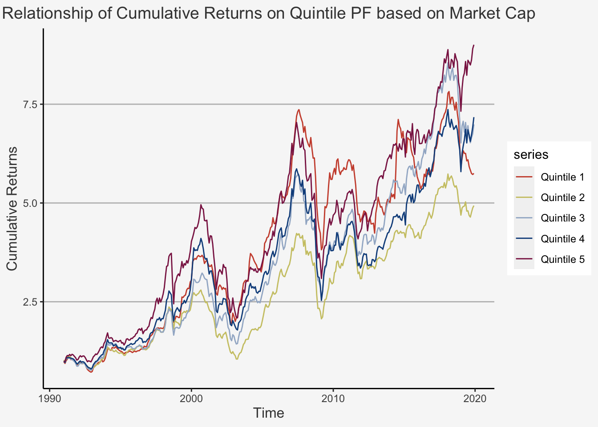

Chapter 9 Factor Models
9.1 The idea behind factor models
In the previous chapter, we looked at the Markowitz Mean-Variance optimisation and introduced its composition. Therein, we derived the model under the consideration of the mean, variance as well as covariance matrix between the individual, observed assets. In the case of n assets, we thus stated that we require n means, n variances and n(n-1)/2 covariances, resulting in a total of 2n + n(n-1)/2 parameters to describe the model. For instance, if we have 1000 assets, then we would require 501’500 parameters to describe the model inherently. Furthermore, we can show that attempting to estimate the model parameters with a sufficient precision is nearly unfeasible using historical price data over time. This is due to the fact that the precision of any variable within an iid setting depends on the square root of the number of observations. Consequently, if the number of observations is insufficiently large, confidence intervals to determine the accuracy of any expected variable value would be deemed redundant. Given the large number of parameters required to describe the model and the number of observations required to estimate the model parameters with sufficient precision, we understand that the Markowitz model is deemed to be a very data intensive model. As a consequence, we need to find simpler models which are less data intensive but can still capture a sufficient amount of the underlying, true asset variation.
Based on this notion, the term Factor Models was primed. These models assume that the correlation between any two assets is explained by systematic factors. That is, the underlying return structure of multiple assets depends on common components which can be represented by quantifiable proxies. Using this assumption, one can restrict attention to only K (non-diversifiable) factors.
Factor models have the advantage that they drastically reduce the number of input variables. Further, they allow to estimate systematic risk components by analysing expected return structures. However, they are purely statistical models and rely on past data. Further, they all assume stationarity.
The aim of factor models is to understand the drivers of asset prices. Broadly speaking, the main concept behind factor investing is that the financial performance of firms depends on distinct factors, whether they are latent or macroeconomic, or related to intrinsic, firm-specific characteristics. Cochrane (2011) states that the first essential question is which characteristics really provide independent information about average returns. Understanding whether the exposure of assets towards common variable(s) can be used to help explain the cross-sectional variation in returns is therein the main emphasis of factor investing.
As we have covered in the lecture, factor models are natural extensions of the Arbitrage Pricing Theory model (APT) introduced by Ross (1976), who assumes that security returns return can be modeled as a linear combination of underlying factors \(f_k\) and that investors operate in functioning security markets which do not allow for the persistence of arbitrage opportunities:
\[ r_{i,t} = \alpha_i + \sum_{i=1}^K \beta_{i,k}f_{t,k} + \epsilon_{i,t} \]
Here, the usual IID setting econometric assumptions hold, implying that \(cov(\epsilon_{i,t},\epsilon_{j,t}) = 0\) and \(cov(\epsilon_{i},f_{i}) = 0\).
A quasi factor-based model is The CAPM. The CAPM is a commonly used model to assess asset returns. Previously, we introduced both the theoretical intuition as well as the practical implementation of the model. We derived how the exposure towards market movements influence stock returns and showed how to compute the underlying framework. Further, we derived options to test the model’s validity and showed that the CAPM does not hold empirically. Consequently, we were able to present that the theoretical foundations of the CAPM are not sufficient to effectively explain the variation in asset returns. This implies that other factors are needed to help explain the remaining variation in asset returns unexplained by the market. To put it in other words, the existence of factors that can explain asset returns further contradicts the validity of the CAPM, which assumes that the variation solely depends on the market portfolio. Consequently, factors are also regarded as anomalies. A quasi factor-based model is The CAPM. The CAPM is a commonly used model to assess asset returns. Previously, we introduced both the theoretical intuition as well as the practical implementation of the model. We derived how the exposure towards market movements influence stock returns and showed how to compute the underlying framework. Further, we derived options to test the model’s validity and showed that the CAPM does not hold empirically. Consequently, we were able to present that the theoretical foundations of the CAPM are not sufficient to effectively explain the variation in asset returns. This implies that other factors are needed to help explain the remaining variation in asset returns unexplained by the market. To put it in other words, the existence of factors that can explain asset returns further contradicts the validity of the CAPM, which assumes that the variation solely depends on the market portfolio. Consequently, factors are also regarded as anomalies.
Importantly, each factor portfolio is a tracking portfolio. That is, the returns on such a portfolio are tracked by the evolution of one particular source of risk but are uncorrelated with other sources of risk.
9.2 The quest of detecting anomalies
How can we thus find such anomalies? As we already mentioned, there is no clear theoretical foundation to the use of certain factors. Mostly, researchers or industry experts consider market movements and attempt to pin down these movements based on correlating characteristics (either micro- or macro-oriented) of the firms under consideration. Usually then, based on these observations, theoretical arguments which suit the given movements are constructed around the anomalies. For instance, Chen Roll and Ross introduced one of the most fundamental multifactor models in 1986 by incorporating macroeconomic variables such as Growth in industrial productiion, inflation expected changes or corporate rated bonds and found a significant effect in the cross-section of returns. Based on their research, Fama and French (1993) created their famous Size and Value portfolio strategies on the observations that small size (measured by market capitalisation) as well as value (measured by high book-to-market ratios) securities outperform their opposite counterparts. Further notable examples include the Momentum strategy (by Jegadeesh and Titman (1993) and Carhart (1997)), Profitability (by Fama and French (2015) and Bouchaud et al. (2019)), Investment (by Fama and French (2015) as well as Hou, Xue, and Zhang (2015)) as well as low-risk (by Frazzini and Pedersen (2014)) or Liquidity factor (by Acharya and Pedersen (2005)).While these factors (i.e., long-short portfolios) exhibit time-varying risk premia and are magnified by corporate news and announcements, it is well-documented (and accepted) that they deliver positive returns over long horizons.
In essence, factors that are shown to hold empirically are manifold. For instance, Chen and Zimmermann (2019) attempt to replicate the 300 most commonly cited factors introduced during the last 40 years and publish the final factors on their website called . Although their work greatly facilitates an improved accessibility of factor investment opportunities, they also show the inherent challenges associated with factor investing. These include, among others:
- The limited possibility to replicate the factor exposure
- The dependence of the variational properties on data-specific idiosyncracies
- The likelihood of p-hacking strategies
- The time-wise dependence on factor exposure
- The destruction of potentially valid factor premia may be due to herding
- The fading of anomalies due to the publication and subsequent reduction of arbitrage opportunities (through re-investment of multiple market participants)
Consequently, although the pool of potentially valid factors is quite large, several of these factors suffer from one or multiple of the aforementioned issues, thereby rendering their empirical validity at least partially questionable. As such, although a multitude of potential characteristics are able to explain asset returns both time-series wise and cross-sectionally, the large-scale use of high-dimensional factor models must be addressed critically.
9.3 The Fama-French Three Factor Model
The perhaps most famous factor model is the Fama-French three-factor model (1993). It was based on observations by the researchers which found that small size (measured by market capitalisation) as well as value (measured by high book-to-market ratios) securities outperform their opposite counterparts. The theoretical reasoning for this were mostly pinned down to risk-based anomalies. For instance, it was argued that small companies outperform their larger counterparts because they are exposed towards a higher liquidation, operational as well as credit based risk, implying that they need to compensate for said risk throughout a higher return structure. Furthermore, the value factor was usually explained through perceptions of future performance based on financing activities, which might also constitute as financial distress assessments.
Fama and French do not only highlight the importance of size and value, but they also develop a method to generate factor portfolios.
Their main strategy is the following. They construct a portfolio of large firms and one of small firms. As break point they use the median size of the firms listed on NYSE to classify all stocks traded on NYSE, Amex and Nasdaq. These portfolios are value weighted. They then construct a zero net investment size factor portfolio by going long the small and going short the big stock portfolio. Further, they construct a Book-to-Market (B2M) exposure by sorting the stocks into low (bottom 30%), medium (middle 40%) and high (top 30%) groups based on B2M.
Based on this, they construct six portfolios based on the intersection of size and B/M sorts:
S/L: Small Stocks with Low B2M
S/M: Small Stocks with Medium B2M
S/H: Small Stocks with High B2M
B/L: Big Stocks with Low B2M
B/M: Big Stocks with Medium B2M
B/H: Big Stocks with High B2M
The returns of the zero-net-investment factors SMB (Small minus Big) and HML (High minus Low) are created from these portfolios
\[ \begin{align} R_{SMB} &= 1/3(R_{S/L} + R_{S/M} + R_{S/H}) - 1/3(R_{B/L} + R_{B/M} + R_{B/H}) \\ R_{HML} &= 1/2(R_{S/H} + R_{B/H}) - 1/2(R_{S/L} + R_{B/L}) \end{align} \]
Based on these factors, the factor betas of the stocks are calculated in a First Pass regression:
\[ E(R_i) - r_f = \alpha_i + \beta_i(E(R_M) - r_f) + \gamma_iE[R_{SMB}] + \delta_iE[R_{HML}] \]
The method used of Fama-French to construct the factors is the most widely adopted approach to create factors. Most of the subsequent factors were created using said approach of sorting stocks into either \(2 \times 3\) or \(2 \times 2\) portfolios. For instance, to construct the Momentum Factor by Jegadeesh and Titman (1996) as well as Carhart (1997), you can use the same approach as for the HML factor, but just double-sort it based on size and the previous Up/Down movements.
9.4 Testing for factor validity
As we discovered, factor investing describes an investment strategy in which quantifiable corporate or macroeconomic data is considered. Therein, the variation in security returns is poised to depend collectively on these characteristics. In order to test for the validity of the underlying characteristic in determining asset returns, we thus need to set the asset returns in a relation to the factor under consideration. The industry surrounding this investment style poses several methods to test said validity, both within time-series as well as cross-sectional settings.
Throughout the subsequent chapter, we will go over the most common techniques to test for factor validity. Throughout, we will cover the theoretical underpinnings, the actual testing strategy as well as the intuition behind each approach. Further, we will illustrate each testing strategy by using code-based examples on the Size Factor first introduced by Fama and French (1993).
9.4.1 Portfolio Sorts
This is the simplest and most widely applied form of factor testing. The idea is straight-forward: We sort portfolios based on the risk factor under consideration into percentiles (e.g. deciles, quintiles). Then, we look at the return and variance structure of each portfolio and compare their structure throughout the individual percentiles to observe whether we see significant differences between them.
In essence, on each date t, we perform the following steps:
- Rank firms according to a criterion (e.g. Market Capitalisation)
- Sort the firms into portfolios based on the criterion (e.g 10 portfolios for decile portfolios)
- Calculate the weights (either equally or value-weighted)
- Calculate the portfolio returns at t+1
The resulting outcome is a time series of portfolio returns for each portfolio j, \(r_t^j\). Then, we identify an anomaly in the following way:
- Construct a Long-Short portfolio strategy by buying the highest and selling the lowest portfolio percentile group
- Conduct a t-test of the long-short strategy
In essence, what we want to observe is the following:
- A monotonous (possibly significant) change (either increase or decrease) in average returns throughout the portfolio sorts
- A significant t-value for the long-short strategy
Based on the literature, if we can observe both, then we can strengthen our assumption that the factor materially affects security returns. The reasoning is the following. We hypothesise that asset returns depend on a common factor. As such, the larger the exposure of a security towards said factor is, the stronger the returns should be affected by the factor. Consequently, the return of assets in higher portfolios should behave differently to that in lower portfolios. Further, if we assume that the factor under consideration influences the return structure of all assets, then we would expect that the effect grows continuously when moving from one portfolio to the other, inducing a monotonous effect throughout our assets.
First, let’s calculate quintile portfolios based on the characteristic
# Load the datasets
Prices_Adj <- read.csv("~/Desktop/Master UZH/Data/A4_dataset_01.txt", header = T, sep = "\t")
Prices_Unadj <- read.csv("~/Desktop/Master UZH/Data/A4_dataset_04.txt", header = T, sep = "\t")
Shares <- read.csv("~/Desktop/Master UZH/Data/A4_dataset_03.txt", header = T, sep = "\t")
# Create Time-Series objects
Prices_Adj_ts <- xts(x = Prices_Adj[,-1], order.by = as.Date(dmy(Prices_Adj[,1])))
Prices_Unadj_ts <- xts(x = Prices_Unadj[,-1], order.by = as.Date(dmy(Prices_Unadj[,1])))
Shares_ts <- xts(x = Shares[,-1], order.by = as.Date(dmy(Shares[,1])))
# Calculate the Returns
Returns_Adj_ts <- Return.calculate(Prices_Adj_ts, method = "discrete")
# Create the market cap Time-Series
Market_Cap_ts <- Shares_ts * Prices_Unadj_ts
# Perform the decile portfolio sorts
## Take the quintile values
quintiles <- c(0.2, 0.4, 0.6, 0.8)
## Create variables indicating the respective 20'th, 40'th, 60'th, 80'th quintile for each month
for (i in quintiles){
assign(paste0("Market_Cap_Cutoff_", i, "_ts"), matrixStats::rowQuantiles(as.matrix(Market_Cap_ts), probs = i, na.rm = T))
}
# Create the portfolio returns for each quintile
for (i in names(Market_Cap_ts)){
# First create the market capitalisation of each quintile
Market_Cap_Q1 <- ifelse(Market_Cap_ts[,i] <= Market_Cap_Cutoff_0.2_ts, 1, NA)
Market_Cap_Q2 <- ifelse((Market_Cap_ts[,i] > Market_Cap_Cutoff_0.2_ts) & (Market_Cap_ts[,i] <= Market_Cap_Cutoff_0.4_ts), 1, NA)
Market_Cap_Q3 <- ifelse((Market_Cap_ts[,i] > Market_Cap_Cutoff_0.4_ts) & (Market_Cap_ts[,i] <= Market_Cap_Cutoff_0.6_ts), 1, NA)
Market_Cap_Q4 <- ifelse((Market_Cap_ts[,i] > Market_Cap_Cutoff_0.6_ts) & (Market_Cap_ts[,i] <= Market_Cap_Cutoff_0.8_ts), 1, NA)
Market_Cap_Q5 <- ifelse(Market_Cap_ts[,i] > Market_Cap_Cutoff_0.8_ts, 1, NA)
# Then multiply the Market Cap quintile indicators with the secutity returns
Return_Market_Cap_Q1 <- stats::lag(Market_Cap_Q1, 1) * Returns_Adj_ts['1991-01-01/2019-12-01', i]
Return_Market_Cap_Q2 <- stats::lag(Market_Cap_Q2, 1) * Returns_Adj_ts['1991-01-01/2019-12-01', i]
Return_Market_Cap_Q3 <- stats::lag(Market_Cap_Q3, 1) * Returns_Adj_ts['1991-01-01/2019-12-01', i]
Return_Market_Cap_Q4 <- stats::lag(Market_Cap_Q4, 1) * Returns_Adj_ts['1991-01-01/2019-12-01', i]
Return_Market_Cap_Q5 <- stats::lag(Market_Cap_Q5, 1) * Returns_Adj_ts['1991-01-01/2019-12-01', i]
if (i == "NESN"){
Return_Market_Cap_Q1_final <- Return_Market_Cap_Q1
Return_Market_Cap_Q2_final <- Return_Market_Cap_Q2
Return_Market_Cap_Q3_final <- Return_Market_Cap_Q3
Return_Market_Cap_Q4_final <- Return_Market_Cap_Q4
Return_Market_Cap_Q5_final <- Return_Market_Cap_Q5
}
else {
Return_Market_Cap_Q1_final <- cbind(Return_Market_Cap_Q1_final, Return_Market_Cap_Q1)
Return_Market_Cap_Q2_final <- cbind(Return_Market_Cap_Q2_final, Return_Market_Cap_Q2)
Return_Market_Cap_Q3_final <- cbind(Return_Market_Cap_Q3_final, Return_Market_Cap_Q3)
Return_Market_Cap_Q4_final <- cbind(Return_Market_Cap_Q4_final, Return_Market_Cap_Q4)
Return_Market_Cap_Q5_final <- cbind(Return_Market_Cap_Q5_final, Return_Market_Cap_Q5)
}
}
# Create mean returns of each portfolio
Mean_Return_EW_Q1_final <- rowMeans(Return_Market_Cap_Q1_final, na.rm = T)
Mean_Return_EW_Q2_final <- rowMeans(Return_Market_Cap_Q2_final, na.rm = T)
Mean_Return_EW_Q3_final <- rowMeans(Return_Market_Cap_Q3_final, na.rm = T)
Mean_Return_EW_Q4_final <- rowMeans(Return_Market_Cap_Q4_final, na.rm = T)
Mean_Return_EW_Q5_final <- rowMeans(Return_Market_Cap_Q5_final, na.rm = T)
# Merge the entire datatframe to one
Dates <- as.Date(dmy(Prices_Adj[,1][14:361]))
## For the normal returns
Mean_Return_EW_quintiles <- as.data.frame(cbind(Dates,
Mean_Return_EW_Q1_final,
Mean_Return_EW_Q2_final,
Mean_Return_EW_Q3_final,
Mean_Return_EW_Q4_final,
Mean_Return_EW_Q5_final))
Mean_Return_EW_quintiles_ts <- xts(x = Mean_Return_EW_quintiles[,-1], order.by = Dates)
colnames(Mean_Return_EW_quintiles_ts) <- c("Quintile 1", "Quintile 2", "Quintile 3", "Quintile 4", "Quintile 5")
## For the cumulative returns
Mean_Return_EW_quintiles_cp <- as.data.frame(cbind(Dates,
cumprod(1+Mean_Return_EW_Q1_final),
cumprod(1+Mean_Return_EW_Q2_final),
cumprod(1+Mean_Return_EW_Q3_final),
cumprod(1+Mean_Return_EW_Q4_final),
cumprod(1+Mean_Return_EW_Q5_final)))
Mean_Return_EW_quintiles_cp_ts <- xts(x = Mean_Return_EW_quintiles_cp[,-1], order.by = Dates)
colnames(Mean_Return_EW_quintiles_cp_ts) <- c("Quintile 1", "Quintile 2", "Quintile 3", "Quintile 4", "Quintile 5")
# Finally, we can plot the relationship
plot_ret <- tidy(Mean_Return_EW_quintiles_ts) %>% ggplot(aes(x=index,y=value, color=series)) + geom_line() +
scale_color_manual(values=c("tomato3", "khaki3", "lightsteelblue3", "dodgerblue4", "violetred4")) +
ylab("Cumulative Returns") + xlab("Time") + ggtitle("Relationship of Normal Returns on Quintile PF based on Market Cap") +
theme(plot.title= element_text(size=14, color="grey26",
hjust=0.5,
lineheight=1.2), panel.background = element_rect(fill="#f7f7f7"),
panel.grid.major.y = element_line(size = 0.5, linetype = "solid", color = "grey"),
panel.grid.minor = element_blank(),
panel.grid.major.x = element_blank(),
plot.background = element_rect(fill="#f7f7f7", color = "#f7f7f7"), axis.title.x = element_text(color="grey26", size=12),
axis.title.y = element_text(color="grey26", size=12),
axis.line = element_line(color = "black"))
# Finally, we can plot the relationship
plot_cumret <- tidy(Mean_Return_EW_quintiles_cp_ts) %>% ggplot(aes(x=index,y=value, color=series)) + geom_line() +
scale_color_manual(values=c("tomato3", "khaki3", "lightsteelblue3", "dodgerblue4", "violetred4")) +
ylab("Cumulative Returns") + xlab("Time") + ggtitle("Relationship of Cumulative Returns on Quintile PF based on Market Cap") +
theme(plot.title= element_text(size=14, color="grey26",
hjust=0.5,
lineheight=1.2), panel.background = element_rect(fill="#f7f7f7"),
panel.grid.major.y = element_line(size = 0.5, linetype = "solid", color = "grey"),
panel.grid.minor = element_blank(),
panel.grid.major.x = element_blank(),
plot.background = element_rect(fill="#f7f7f7", color = "#f7f7f7"), axis.title.x = element_text(color="grey26", size=12),
axis.title.y = element_text(color="grey26", size=12),
axis.line = element_line(color = "black"))
plot_ret
plot_cumret
As we can see, there appears to be a strictly increasing trend based on the quintile portfolios. We can confirm this trend by looking at the average returns and their standard deviations.
# Calculate the mean returns
Mean_Return_EW_quintiles_ts <- xts(x = Mean_Return_EW_quintiles[,-1], order.by = Dates)
for (i in names(Mean_Return_EW_quintiles_ts)){
Mean_Return_EW <- mean(Mean_Return_EW_quintiles_ts['1991-01-01/2019-12-01', i])
SD_Return_EW <- sd(Mean_Return_EW_quintiles_ts['1991-01-01/2019-12-01', i])
n_Return_EW <- length(Mean_Return_EW_quintiles_ts['1991-01-01/2019-12-01', i])
if (i == "Mean_Return_EW_Q1_final"){
Mean_Return_EW_final <- Mean_Return_EW
SD_Return_EW_final <- SD_Return_EW
n_Return_EW_final <- n_Return_EW
}
else {
Mean_Return_EW_final <- cbind(Mean_Return_EW_final, Mean_Return_EW)
SD_Return_EW_final <- cbind(SD_Return_EW_final, SD_Return_EW)
n_Return_EW_final <- cbind(n_Return_EW_final, n_Return_EW)
}
}
# Create the final dataframe
Mean_SD_Size_EW_Quintile_PF <- as.data.frame(rbind(Mean_Return_EW_final, SD_Return_EW_final, n_Return_EW_final))
colnames(Mean_SD_Size_EW_Quintile_PF) <- c("Quintile_1", "Quintile_2", "Quintile_3", "Quintile_4", "Quintile_5")
rownames(Mean_SD_Size_EW_Quintile_PF) <- c("Average Return", "SD Return", "N Observations")
round(Mean_SD_Size_EW_Quintile_PF,4)## Quintile_1 Quintile_2 Quintile_3 Quintile_4 Quintile_5
## Average Return 0.0060 0.0054 0.0066 0.0067 0.0075
## SD Return 0.0436 0.0406 0.0450 0.0446 0.0482
## N Observations 348.0000 348.0000 348.0000 348.0000 348.0000Finally, we can compute the t-test to check if the average return is statistically different
# Let's create a simple function to calculate the t-test for the average difference
t_test_mean_diff <- function(mean_a, mean_b, sd_a, sd_b, n_a, n_b) {
t_test <- (mean_a - mean_b) / sqrt(sd_a^2/n_a + sd_b^2/n_b)
return(t_test)
}
# Try out the formula
t_test_mean_diff(Mean_SD_Size_EW_Quintile_PF$Quintile_5[1],
Mean_SD_Size_EW_Quintile_PF$Quintile_1[1],
Mean_SD_Size_EW_Quintile_PF$Quintile_5[2],
Mean_SD_Size_EW_Quintile_PF$Quintile_1[2],
Mean_SD_Size_EW_Quintile_PF$Quintile_5[3],
Mean_SD_Size_EW_Quintile_PF$Quintile_1[3])## [1] 0.444822As we can see, there is no significant difference between the average returns of the high and the low portfolio. This implies, given the IID considerations and the baseline statistical properties assumed, the difference in average returns between the smallest and largest stock portfolio is statistically indistinguishable from zero at conventional levels. Thus, the hypothesis that the average returns are not different from each other cannot be rejected.
9.4.2 Factor Construction
The second approach constitutes the creation of so-called risk-factor mimicking portfolios. These are portfolios which are sorted based on the risk factor of interest but are put relative to each other, depending on the exposure towards the characteristic under consideration. Consequently, we follow a quite similar approach to the portfolio sorts. That is, we:
- First single-sort the assts based on specific characteristics in usually 2 or 3 portfolios
- Double-sort the assets based on the portfolio allocations of the first sort (e.g. Small and Low B2M assets) to obtain the risk-factor mimicking portfolios
- Take the difference between the double-sorted portfolios which are more and which are less exposed towards the given risk factor
The most usual approaches include forming bivariate sorts and aggregating several portfolios together, as in the original contribution of Fama and French (1993). However, some papers also only single-sort the portfolios based on only the respective risk factor. Seldomly, but sometimes appearing, practitioners use n-fold sorting approaches, implying they sort the assets according to n-folds. However, an important caveat with this strategy is the scalability. For instance, let’s look at the n = 3 case, in which we would sort portfolios based on Size, B2M and previous return (used for the Momentum factor). Let’s assume we would sort portfolios based on each characteristics according to above and below median values. In that case, we would create \(2 \times 2 \times 2 = 8\) sorts. For instance, the SMB factor would be:
\[ \begin{equation} SMB = 1/4(R_{SLU} + R_{SHU} + R_{SLD} + R_{SHD}) - 1/4(R_{BLU} + R_{BHU} + R_{BLD} + R_{BHD}) \end{equation} \]
With this strategy, we now interacted the assets based on each characteristic under consideration. For instance, \(R_{SHU}\) is the return of the Small-High-Up portfolio, implying lower than median market capitalisation, higher than median B2M ratio and higher than average past return. It is easy to see that operating on high-dimensional regression settings would quickly render this approach infeasible as the resulting number of created portfolios grows by a factor of \(2^n\) if a complete interaction is to be maintained. And this is if we only keep to sort the portfolios based on median values. Given the large amount of factors that have been proposed throughout the last two decades (currently there are over 300 factors that are argued to explain the return structure of US equities), such an approach would require substantial computational power to enable a high-dimensional factor analysis.
Consequently, let’s follow two approaches in the subsequent factor creation.
- First, we single-sort portfolios based on their market capitalisation and then take their difference to create a Long-Short (LS) Size Portfolio
- Then, we recreate the Fama-French SMB factor for the Swiss market by using the formula that was discussed in the lecture
# Load the datasets
Prices_Adj <- read.csv("~/Desktop/Master UZH/Data/A4_dataset_01.txt", header = T, sep = "\t")
Prices_Unadj <- read.csv("~/Desktop/Master UZH/Data/A4_dataset_04.txt", header = T, sep = "\t")
Shares <- read.csv("~/Desktop/Master UZH/Data/A4_dataset_03.txt", header = T, sep = "\t")
Book <- read.csv("~/Desktop/Master UZH/Data/A4_dataset_02.txt", header = T, sep = "\t")
# Create Time-Series objects
Prices_Adj_ts <- xts(x = Prices_Adj[,-1], order.by = as.Date(dmy(Prices_Adj[,1])))
Prices_Unadj_ts <- xts(x = Prices_Unadj[,-1], order.by = as.Date(dmy(Prices_Unadj[,1])))
Shares_ts <- xts(x = Shares[,-1], order.by = as.Date(dmy(Shares[,1])))
Book_ts <- xts(x = Book[,-1], order.by = as.Date(dmy(Book[,1])))
# Calculate the Returns
Returns_Adj_ts <- Return.calculate(Prices_Adj_ts, method = "discrete")
# Create the market cap Time-Series
Market_Cap_ts <- Shares_ts * Prices_Unadj_ts
# Create the Book-to-Market ratio
B2M_ts <- stats::lag(Book_ts, 6) / Market_Cap_ts
# Create the cut-off points of each factor composite
Market_Cap_ts_Median_Cutoff <- matrixStats::rowMedians(Market_Cap_ts, na.rm = T)
B2M_Low_Cutoff <- matrixStats::rowQuantiles(as.matrix(B2M_ts), probs = 0.3, na.rm = T)
B2M_High_Cutoff <- matrixStats::rowQuantiles(as.matrix(B2M_ts), probs = 0.7, na.rm = T)
# Based on the Cutoff values, generate dummies that indicate whether a certain data point is within a given cutoff level
for (i in names(Market_Cap_ts)){
# Create the indicator variables
## For the Market Cap
Market_Cap_Small <- ifelse(Market_Cap_ts[, i] <= Market_Cap_ts_Median_Cutoff, 1, NA)
Market_Cap_Big <- ifelse(Market_Cap_ts[, i] > Market_Cap_ts_Median_Cutoff, 1, NA)
## For the B2M Ratio
B2M_Low <- ifelse(B2M_ts[, i] <= B2M_Low_Cutoff, 1, NA)
B2M_Mid <- ifelse((B2M_ts[, i] > B2M_Low_Cutoff) & (B2M_ts[, i] <= B2M_High_Cutoff), 1, NA)
B2M_High <- ifelse(B2M_ts[, i] > B2M_High_Cutoff, 1, NA)
## For the interaction indicator variables to get S/L, S/M, S/H & B/L, B/M, B/H
Assets_SL <- ifelse((Market_Cap_ts[, i] <= Market_Cap_ts_Median_Cutoff) & (B2M_ts[, i] <= B2M_Low_Cutoff), 1, NA)
Assets_SM <- ifelse((Market_Cap_ts[, i] <= Market_Cap_ts_Median_Cutoff) & (B2M_ts[, i] > B2M_Low_Cutoff) & (B2M_ts[, i] <= B2M_High_Cutoff), 1, NA)
Assets_SH <- ifelse((Market_Cap_ts[, i] <= Market_Cap_ts_Median_Cutoff) & (B2M_ts[, i] > B2M_High_Cutoff), 1, NA)
Assets_BL <- ifelse((Market_Cap_ts[, i] > Market_Cap_ts_Median_Cutoff) & (B2M_ts[, i] <= B2M_Low_Cutoff), 1, NA)
Assets_BM <- ifelse((Market_Cap_ts[, i] > Market_Cap_ts_Median_Cutoff) & (B2M_ts[, i] > B2M_Low_Cutoff) & (B2M_ts[, i] <= B2M_High_Cutoff), 1, NA)
Assets_BH <- ifelse((Market_Cap_ts[, i] > Market_Cap_ts_Median_Cutoff) & (B2M_ts[, i] > B2M_High_Cutoff), 1, NA)
# Calculate the returns
## For the Market Cap
Return_Small <- stats::lag(Market_Cap_Small, 1) * Returns_Adj_ts['1991-01-01/2019-12-01', i]
Return_Big <- stats::lag(Market_Cap_Big, 1)* Returns_Adj_ts['1991-01-01/2019-12-01', i]
## For the B2M Ratio
Return_Low <- stats::lag(B2M_Low, 1) * Returns_Adj_ts['1991-01-01/2019-12-01', i]
Return_Mid <- stats::lag(B2M_Mid, 1) * Returns_Adj_ts['1991-01-01/2019-12-01', i]
Return_High <- stats::lag(B2M_High, 1)* Returns_Adj_ts['1991-01-01/2019-12-01', i]
## For the interaction indicator variables to get S/L, S/M, S/H & B/L, B/M, B/H returns
Returns_SL <- stats::lag(Assets_SL, 1) * Returns_Adj_ts['1991-01-01/2019-12-01', i]
Returns_SM <- stats::lag(Assets_SM, 1) * Returns_Adj_ts['1991-01-01/2019-12-01', i]
Returns_SH <- stats::lag(Assets_SH, 1) * Returns_Adj_ts['1991-01-01/2019-12-01', i]
Returns_BL <- stats::lag(Assets_BL, 1) * Returns_Adj_ts['1991-01-01/2019-12-01', i]
Returns_BM <- stats::lag(Assets_BM, 1) * Returns_Adj_ts['1991-01-01/2019-12-01', i]
Returns_BH <- stats::lag(Assets_BH, 1) * Returns_Adj_ts['1991-01-01/2019-12-01', i]
if (i == "NESN"){
Returns_SL_final <- Returns_SL
Returns_SM_final <- Returns_SM
Returns_SH_final <- Returns_SH
Returns_BL_final <- Returns_BL
Returns_BM_final <- Returns_BM
Returns_BH_final <- Returns_BH
Return_Small_final <- Return_Small
Return_Big_final <- Return_Big
}
else {
Returns_SL_final <- cbind(Returns_SL_final, Returns_SL)
Returns_SM_final <- cbind(Returns_SM_final, Returns_SM)
Returns_SH_final <- cbind(Returns_SH_final, Returns_SH)
Returns_BL_final <- cbind(Returns_BL_final, Returns_BL)
Returns_BM_final <- cbind(Returns_BM_final, Returns_BM)
Returns_BH_final <- cbind(Returns_BH_final, Returns_BH)
Return_Small_final <- cbind(Return_Small_final, Return_Small)
Return_Big_final <- cbind(Return_Big_final, Return_Big)
}
}
# Now, we create average, equally weighted returns
EW_Returns_SL <- rowMeans(Returns_SL_final, na.rm = T)
EW_Returns_SM <- rowMeans(Returns_SM_final, na.rm = T)
EW_Returns_SH <- rowMeans(Returns_SH_final, na.rm = T)
EW_Returns_BL <- rowMeans(Returns_BL_final, na.rm = T)
EW_Returns_BM <- rowMeans(Returns_BM_final, na.rm = T)
EW_Returns_BH <- rowMeans(Returns_BH_final, na.rm = T)
EW_Returns_Big <- rowMeans(Return_Big_final, na.rm = T)
EW_Returns_Small <- rowMeans(Return_Small_final, na.rm = T)
# Based on this, we can use the formula to compute the SMB and HML factors
SMB <- 1/3*(EW_Returns_SL + EW_Returns_SM + EW_Returns_SH) - 1/3*(EW_Returns_BL + EW_Returns_BM + EW_Returns_BH)
LS_Size <- EW_Returns_Small - EW_Returns_Big
# Calculate the Cumulative Product
Dates <- as.Date(dmy(Prices_Adj[,1][14:361]))
SMB_cp <- as.data.frame(cbind(Dates,cumprod(1+SMB), cumprod(1+LS_Size)))
SMB_cp_ts <- xts(x = SMB_cp[,-1], order.by = Dates)
names(SMB_cp_ts) <- c("Cumulative Return LS SMB", "Cumulative Return LS Size")9.4.2.1 Cumulative Returns of the Factor-mimicking Portfolios
# Create the plot
tidy(SMB_cp_ts) %>% ggplot(aes(x=index,y=value, color=series)) + geom_line() +
scale_color_manual(values=c("tomato3", "khaki3", "lightsteelblue3", "dodgerblue4", "violetred4")) +
ylab("Cumulative Returns") + xlab("Time") + ggtitle("Relationship of Cumulative Returns on SMB LS PF") +
theme(plot.title= element_text(size=14, color="grey26",
hjust=0.5,
lineheight=1.2), panel.background = element_rect(fill="#f7f7f7"),
panel.grid.major.y = element_line(size = 0.5, linetype = "solid", color = "grey"),
panel.grid.minor = element_blank(),
panel.grid.major.x = element_blank(),
plot.background = element_rect(fill="#f7f7f7", color = "#f7f7f7"), axis.title.x = element_text(color="grey26", size=12),
axis.title.y = element_text(color="grey26", size=12),
axis.line = element_line(color = "black")) 
Great! We were able to construct the size factor based on both single- and double-sorting strategy. Interestingly, we observe that the Fama-French factor shows lower cumulative returns compared to the single-sorted factor. We can assess this observation analytically. For instance, we could deconstruct the factor again into its individual constituents. Note that the main difference between both was the inclusion of a value characteristic through a B2M ratio. Apparently, this inclusion decreases the cumulative returns quite considerably from the 2000’s on. Let’s visualise this as well:
# Calculate the Cumulative Product
Dates <- as.Date(dmy(Prices_Adj[,1][14:361]))
SMB_cp_components <- as.data.frame(cbind(Dates,
cumprod(1+EW_Returns_SL),
cumprod(1+EW_Returns_SM),
cumprod(1+EW_Returns_SH),
cumprod(1+EW_Returns_BL),
cumprod(1+EW_Returns_BM),
cumprod(1+EW_Returns_BH)))
# Create the xts object
SMB_cp_components_ts <- xts(x = SMB_cp_components[,-1], order.by = Dates)
names(SMB_cp_components_ts) <- c("Cumulative Return S/L", "Cumulative Return S/M", "Cumulative Return S/H", "Cumulative Return B/L", "Cumulative Return B/M", "Cumulative Return B/H")
# Create the plot for the double-sorted SMB Factor
SMB_plot_comp <- tidy(SMB_cp_components_ts) %>% ggplot(aes(x=index,y=value, color=series)) + geom_line() +
scale_color_manual(values=c( "khaki3", "lightsteelblue3", "dodgerblue4", "tomato3", "violetred4", "darkorange2")) +
ylab("Cumulative Returns") + xlab("Time") + ggtitle("Relationship of Cumulative Returns on SMB LS PF - Components") +
labs(color='Factor Portfolios') +
scale_colour_manual(values = c("lightsteelblue3","dodgerblue4", "darkorange2", "springgreen4", "violetred4", "goldenrod", "khaki3")) +
theme(plot.title= element_text(size=14, color="grey26",
hjust=0.3,lineheight=2.4, margin=margin(15,0,15,0)),
panel.background = element_rect(fill="#f7f7f7"),
panel.grid.major.y = element_line(size = 0.5, linetype = "solid", color = "grey"),
panel.grid.minor = element_blank(),
panel.grid.major.x = element_blank(),
plot.background = element_rect(fill="#f7f7f7", color = "#f7f7f7"),
axis.title.y = element_text(color="grey26", size=12, margin=margin(0,10,0,10)),
axis.title.x = element_text(color="grey26", size=12, margin=margin(10,0,10,0)),
axis.line = element_line(color = "grey")) ## Scale for 'colour' is already present. Adding another scale for 'colour', which will replace the existing scale.SMB_plot_comp
As we can observe, by distributing the average return into its constituents, we see that average returns are mainly driven by High B2M ratios. Furthermore, we can observe that, throughout all B2M characteristics, assets with larger than median market caps outperform their smaller counterparts. Given this mononous behaviour, it is apparent that the Size factor appears to no longer hold, at least when considering the last 30 years. Furthermore, it can be shown that, although the value factor is still valid, its magnitude depends on the market capitalisation of the securities under consideration, as higher B2M ratios outperform their lower counterparts only when we control for size (for instance, the second best performing portfolio is small and high, and it greatly outperforms the big and medium B2M ratio portfolio).
9.4.2.2 Fama-MacBeth Regression
We have seen the strength of the Fama-MacBeth (1973) procedure in assessing the ability of a covariate to explain movements in the cross-section of dependent returns during the application of the CAPM, where we were able to empirically prove that the movements of the market returns are unable to sufficiently explain the cross-sectional variation in asset returns. Given that the Market Return in the CAPM is nothing more than a factor itself, it is straight-forward to assume that we can replicate the procedure to include the factors under consideration.
However, since we are working with multiple factors, we need to generalise the formula we encountered in the previous chapter. As such, we first run a time-series regression of each asset’s excess return on the factors under consideration. That is, we run:
\[ r_{i,t} - r_{ft} = \alpha_i + \sum_{k=1}^K \beta_{i,k}f_k + \epsilon_{it} \]
whereas \(f_k\) is the k’th factor in the model.
Based on that, retrieve the factor loadings of each factor and perform a cross-sectional regression at each date, in which we regress the (excess) returns of each asset on the factor loadings. That is, we run:
\[ r_{i,t} - r_{ft} = \lambda_{i,0} + \sum_{k=1}^K \lambda_{i,k}\hat{\beta}_{i,k} + u_{it} \]
This is identical to what we have seen in the previous chapter. The only difference is now that we have multiple factors. This is represented by the sum sign. This means that we take factor loading 1 to k and run, at each date, the cross-section of asset returns on the asset returns.
Let’s recreate the FM (1973) approach and apply it to the SMB factor.
# Load the risk free rate as well as the Market Index
rf <- read.csv("~/Desktop/Master UZH/Data/A2_dataset_02.txt", header = T, sep = "\t")
rf_sub <- subset(rf, (Date >= '1989-12-01') & (Date <= '2019-12-31'))
rf_ts <- xts(rf_sub[,-1], order.by = as.Date(dmy(Prices_Adj_FF[,1])))
rf_ts_yearly <- rf_ts$SWISS.CONFEDERATION.BOND.1.YEAR...RED..YIELD / 100
rf_ts_monthly <- ((1 + rf_ts_yearly)^(1/12) - 1)['1991-01-01/2019-12-01']
colnames(rf_ts_monthly) <- "rf"
SMI <- read.csv("~/Desktop/Master UZH/Data/A2_dataset_03.txt", header = T, sep = "\t")
SMI_sub <- subset(SMI, (Date >= '1989-12-01') & (Date <= '2019-12-31'))
SMI_ts <- xts(SMI_sub[,2], order.by = as.Date(dmy(Prices_Adj_FF[,1])))
SMI_ts_ret <- Return.calculate(SMI_ts, method = "discrete")
Mkt_rf_SMI <- SMI_ts_ret['1991-01-01/2019-12-01'] - rf_ts_monthly['1991-01-01/2019-12-01']
colnames(Mkt_rf_SMI) <- "Index"
# Calculate the X and y variables for the regression
SPI_Index_ts <- merge.xts(Returns_Adj_ts['1991-01-01/2019-12-01'], rf_ts_monthly['1991-01-01/2019-12-01'], Mkt_rf_SMI['1991-01-01/2019-12-01'], SMB)
# First Pass Regression
for (i in names(SPI_Index_ts)[1:384]){
col_name <- paste0(i)
# Get the rolling window coefficients
fit_roll_coefs <- summary(lm(SPI_Index_ts[,i] - SPI_Index_ts[,385] ~ SPI_Index_ts[,386] + SPI_Index_ts[,387]))$coefficients[2:3]
if (i == 'NESN'){
col_name_final <- col_name
fit_roll_coefs_final_beta <- fit_roll_coefs_beta
fit_roll_coefs_final <- fit_roll_coefs
}
else{
col_name_final <- cbind(col_name_final, col_name)
fit_roll_coefs_final <- cbind(fit_roll_coefs_final, fit_roll_coefs)
}
}
# Set the column names
colnames(fit_roll_coefs_final) <- col_name_final
# Get the coefficients at each time period
beta_smb <- t(fit_roll_coefs_final)
colnames(beta_smb) <- c("MKT_RF", "SMB")
avg_ret <- t(SPI_Index_ts[,1:384])
# Bind them together
second_pass_data <- as.data.frame(cbind(beta_smb, avg_ret))
# Perform the second pass regression
factors = 2
models <- lapply(paste("`",names(second_pass_data[,2:350]) , "`", ' ~ MKT_RF + SMB', sep = ""),
function(f){ lm(as.formula(f), data = second_pass_data) %>% # Call lm(.)
summary() %>% # Gather the output
"$"(coef) %>% # Keep only the coefs
data.frame() %>% # Convert to dataframe
dplyr::select(Estimate)} # Keep only estimates
)
lambdas <- matrix(unlist(models), ncol = factors + 1, byrow = T) %>%
data.frame()
colnames(lambdas) <- c("Constant", "MKT_RF", "SMB")
# We can now calculate the respective t statistics
T_Period <- length(names(second_pass_data[,2:350]))
average <- colMeans(lambdas, na.rm = T)
sd <- colStdevs(lambdas, na.rm = T)
se <- sd / sqrt(T_Period)
t_value <- average/se
# Create a final data frame
second_pass <- as.data.frame(cbind(average, se, t_value))
colnames(second_pass) <- c("Risk Premia Estimate", "Standard Error", "T-Stat")
round(second_pass, 4)## Risk Premia Estimate Standard Error T-Stat
## Constant -0.0016 0.0045 -0.3631
## MKT_RF -0.0015 0.0021 -0.7409
## SMB 0.0063 0.0019 3.2394As we can see, the SMB factor is already quite successful in explaining the cross-sectional movements under consideration. However, note the following. If we leave the standard errors as is, we are highly likely to induce bias into the regression model. This is two-fold. Initially, we can refer to the usual issues in estimation accuracy based on the covariance structure of the assets under consideration. Note therein the heteroskedasticity and serial correlation assumptions we made in earlier chapters. Further, and even more worrisome, the factor loadings \(\hat{\beta}_{i,k}\) are estimates. This induces a bias arising from potential selection mistakes, or measurement error, as we have discussed. Usually, we need to further correct for this by applying different sorting or standard error correction techniques (to comprehend how, please refer to Shanken (1992)).
Lastly, we can visualise the behavior of the factor risk premia over time. Doing so, we will make use of the following visualisation.
# Here, we only take from the second row onwards
lambdas[2:nrow(lambdas),] %>%
# We only select the factors of interet
dplyr::select(MKT_RF, SMB) %>%
# We then bind the columns such that we can gather them on the same x axis
bind_cols(date = as.Date(names(second_pass_data[,3:350]))) %>%
# We gather the factor and the lambda value based on each date
gather(key = factor, value = lambda, -date) %>%
# Here, we just create the ggplot
ggplot(aes(x = date, y = lambda, color = factor)) +
geom_line() + facet_grid(factor~.) +
scale_color_manual(values=c("tomato3", "khaki3", "lightsteelblue3",
"dodgerblue4", "violetred4")) +
theme_light()
We can observe that both factors behave somewhat dependently on each other. That is, they could potentially represent collinearity issues. Both factors compensate in an unclear aggregate effect. This highlights the usefulness of penalized estimates, a machine learning technique that is used to reduce dimensionality of a regression framework. However, it is not the aim of this course to dive into this chapter (yet).
9.4.2.3 Factor Competition
As we stated, the main aim of of factors is to explain the cross-section of stock returns. However, as we have shown above, there is a potential that factors are moving simultaneously. In other words, it is likely that some factors are colinear to each other. As we understand it, collinearity is an issue because it absorbs variation of a given covariate, thereby making the estimates of interest redundant. If we have a variable which can be substantially represented by another variable within our model, then the resulting framework will induce variation which does not add explanatory power to the variation of the underlying variable of interest, but only noise. Without stating the theoretical concepts of this situation, this shares great similarities with the bias-and-variance issue usually encountered in machine learning applications. Therein, by introducing highly correlated variables, we add noise to the model which, subsequently, increases the standard errors and thus reduces the precision of the estimates. In addition, Guine (2021) states that, when asset managers decompose the performance of their returns into factors, overlaps (high absolute correlations) between factors yield exposures that are less interpretable; positive and negative exposures compensate each other in an uncomprehensible, or spurious, way.
They state a simple protocol to account for redundant factors, by running regressions of each factor against all others. That is, you run:
\[ f_{t,k} = \alpha_{k} + \sum_{j \neq k} \delta_{k,j}f_{t,j} + \epsilon_{t,k} \]
The authors state that the interesting metric is then the test statistic associated to the estimation of \(\alpha_k\).
- If \(\alpha_k\) is significantly different from zero, then the cross-section of (other) factors fails to explain exhaustively the average return of factor k.
- Otherwise, the return of the factor can be captured by exposures to the other factors and is thus redundant.
We will come back to this application once we encountered and retrieved more factors for the Swiss market.
9.4.3 How to create factors
We have now leveraged the linear factor model and understand how to use these models in order to evaluate variation and detect anomalies. So far, the factors that we used were already pre-defined, meaning that we had the data already and “just” had to use the factor construction strategy discussed. However, without data there is not much to compute. Consequently, in the next part, we intend to bring you closer to the actual task of retrieving data needed to construct factor mimicking portfolios and then use the steps discussed above to coherently construct the factor of interest. This will be quite helpful because it constitutes of all steps necessary to construct, apply and interpret factors (and thus resembles the day to day work within factor setting asset management companies).
However, a major difference to all external asset managers is that we intend not to take too long in order to retrieve the data at hand :-). As such, we will again introduce the field of the relational database computing. We have elaborated the SQL coding approach to retrieve data from a relational database. However, we now enhanced the function which automates the entire process for us such that we can now get data from CRSP, Compustat as well as Thomson Reuters / Datastream. The latter is important because it allows us to access the worldscope data base, which offers the largeest consortium of company financials as well as security characteristics for Non-US stocks.
The function for WRDS Database Query is the following. Again, you don’t need to know the function by heart. However, there are still multiple databases which this function cannot (yet) retrieve. Thus, if you feel like something is missing, try modifying the function and see if you are able to get what you need. Any help is certainly greatly appreciated!
# Create a function to automate the data retrieval jobs on SQL
dataset_a = NULL
dataset_b = NULL
dataset_sql = NULL
datafmt = NULL
consol = NULL
indfmt = NULL
sic = NULL
gvkey = NULL
tic= NULL
cusip= NULL
isin = NULL
filters_list= NULL
filters_list_final= NULL
filters_list_tweaked= NULL
filters_list_tweaked_final= NULL
query_sql <-
function(dataset_a, dataset_b, column_a, column_b, column_sql, start, end, datafmt, consol, indfmt, sic, gvkey, tic, cusip, isin, multi_function = TRUE, reuters_ds = FALSE){
if (reuters_ds == FALSE){
if (!is.null(column_a)) {
for (i in 1:length(column_a)) {
column_a[i] = paste("a.", column_a[i], sep = "")
column_filter_a = paste(column_a, collapse = ',')
}
}
else {
columns_filter_a = ""
}
if (!is.null(column_b)) {
for (i in 1:length(column_b)) {
column_b[i] = paste("b.", column_b[i], sep = "")
column_filter_b = paste(column_b, collapse = ',')
}
}
else {
columns_filter_b = ""
}
if (!is.null(column_sql)) {
for (i in 1:length(column_sql)) {
column_sql[i] = paste("b.", column_sql[i], sep = "")
column_filter_sql = paste(column_sql, collapse = ',')
}
}
else {
columns_filter_sql = ""
}
if (!is.null(start) & !is.null(end)){
date_filter = paste("a.datadate BETWEEN '", start, "' AND '", end, "'")
}
sic_filter = NULL
if (!is.null(sic)) {
for (i in 1:length(sic)) {
sic[i] = paste("'", sic[i], "'", sep = "")
sic_filter = paste("a.sic IN (", paste(sic, collapse = ','), ")")
}
}
gvkey_filter = NULL
if (!is.null(gvkey)) {
for (i in 1:length(gvkey)) {
gvkey[i] = paste("'", gvkey[i], "'", sep = "")
gvkey_filter = paste("a.gvkey IN (", paste(gvkey, collapse = ','), ")")
}
}
tic_filter = NULL
if (!is.null(tic)) {
for (i in 1:length(tic)) {
tic[i] = paste("'", tic[i], "'", sep = "")
tic_filter = paste("a.tic IN (", paste(tic, collapse = ','), ")")
}
}
cusip_filter = NULL
if (!is.null(cusip)) {
for (i in 1:length(cusip)) {
cusip[i] = paste("'", cusip[i], "'", sep = "")
cusip_filter = paste("a.cusip IN (", paste(cusip, collapse = ','), ")")
}
}
if (!is.null(datafmt)) {
for (i in 1:length(datafmt)) {
datafmt[i] = paste("a.datafmt = '", datafmt[i], "'", sep = "")
datafmt_filter = paste(datafmt, collapse = ',')
}
}
if (!is.null(consol)) {
for (i in 1:length(consol)) {
consol[i] = paste("a.consol = '", consol[i], "'", sep = "")
consol_filter = paste(consol, collapse = ',')
}
}
if (!is.null(indfmt)) {
for (i in 1:length(indfmt)) {
indfmt[i] = paste("a.indfmt = '", indfmt[i], "'", sep = "")
indfmt_filter = paste(indfmt, collapse = ',')
}
}
filters = c(date_filter, cusip_filter, tic_filter, gvkey_filter, sic_filter, datafmt_filter, consol_filter, indfmt_filter)
for (i in 1:length(filters)){
if (!is.null(filters[i])){
filters_list[i] = paste(filters[i], sep = "")
filters_list_final = paste(" WHERE ", paste(filters_list, collapse = " AND "))
}
}
filters_tweaked = c(date_filter, cusip_filter, tic_filter, gvkey_filter, sic_filter)
if (!is.null(filters_tweaked[i])){
for (i in 1:length(filters_tweaked)){
filters_list_tweaked[i] = paste(filters_tweaked[i], sep = "")
filters_list_tweaked_final = paste(" WHERE ", paste(filters_list_tweaked, collapse = " AND "))
}
}
if (multi_function == TRUE){
sql = (paste("SELECT ",
column_filter_a,
", ", column_filter_b,
" FROM ", dataset_a, " a",
" inner join ", dataset_b, " b",
" on ", column_a[1], " = ", column_sql[1],
" and ", column_a[2], " = ", column_sql[2],
" and ", column_a[3], " = ", column_sql[3],
filters_list_final))
}
else {
sql = (paste("SELECT ",
column_filter_a,
" FROM ", dataset_a, " a",
filters_list_tweaked_final))
}
}
else {
if (!is.null(column_a)) {
for (i in 1:length(column_a)) {
column_a[i] = paste("a.", column_a[i], sep = "")
column_filter_a = paste(column_a, collapse = ',')
}
}
else {
columns_filter_a = ""
}
if (!is.null(column_b)) {
for (i in 1:length(column_b)) {
column_b[i] = paste("b.", column_b[i], sep = "")
column_filter_b = paste(column_b, collapse = ',')
}
}
else {
columns_filter_b = ""
}
if (!is.null(column_sql)) {
for (i in 1:length(column_sql)) {
column_sql[i] = paste("b.", column_sql[i], sep = "")
column_filter_sql = paste(column_sql, collapse = ',')
}
}
else {
columns_filter_sql = ""
}
if (!is.null(start) & !is.null(end)){
date_filter = paste("a.year_ BETWEEN '", start, "' AND '", end, "'")
}
sic_filter = NULL
if (!is.null(sic)) {
for (i in 1:length(sic)) {
sic[i] = paste("'", sic[i], "'", sep = "")
sic_filter = paste("a.sic IN (", paste(sic, collapse = ','), ")")
}
}
gvkey_filter = NULL
if (!is.null(gvkey)) {
for (i in 1:length(gvkey)) {
gvkey[i] = paste("'", gvkey[i], "'", sep = "")
gvkey_filter = paste("a.gvkey IN (", paste(gvkey, collapse = ','), ")")
}
}
tic_filter = NULL
if (!is.null(tic)) {
for (i in 1:length(tic)) {
tic[i] = paste("'", tic[i], "'", sep = "")
tic_filter = paste("a.item5601 IN (", paste(tic, collapse = ','), ")")
}
}
cusip_filter = NULL
if (!is.null(cusip)) {
for (i in 1:length(cusip)) {
cusip[i] = paste("'", cusip[i], "'", sep = "")
cusip_filter = paste("a.item6004 IN (", paste(cusip, collapse = ','), ")")
}
}
isin_filter = NULL
if (!is.null(isin)) {
for (i in 1:length(isin)) {
isin[i] = paste("'", isin[i], "'", sep = "")
isin_filter = paste("a.item6008 IN (", paste(isin, collapse = ','), ")")
}
}
filters = c(date_filter, cusip_filter, tic_filter, gvkey_filter, sic_filter, isin_filter)
for (i in 1:length(filters)){
if (!is.null(filters[i])){
filters_list[i] = paste(filters[i], sep = "")
filters_list_final = paste(" WHERE ", paste(filters_list, collapse = " AND "))
}
}
filters_tweaked = c(date_filter, cusip_filter, tic_filter, gvkey_filter, sic_filter, isin_filter)
if (!is.null(filters_tweaked[i])){
for (i in 1:length(filters_tweaked)){
filters_list_tweaked[i] = paste(filters_tweaked[i], sep = "")
filters_list_tweaked_final = paste(" WHERE ", paste(filters_list_tweaked, collapse = " AND "))
}
}
if (multi_function == TRUE){
sql = (paste("SELECT ",
column_filter_a,
", ", column_filter_b,
" FROM ", dataset_a, " a",
" inner join ", dataset_b, " b",
" on ", column_a[1], " = ", column_sql[1],
" and ", column_a[2], " = ", column_sql[2],
" and ", column_a[3], " = ", column_sql[3],
filters_list_final))
}
else {
sql = (paste("SELECT ",
column_filter_a,
" FROM ", dataset_a, " a",
filters_list_tweaked_final))
}
}
}# Open the connection
wrds <- dbConnect(Postgres(),
host='wrds-pgdata.wharton.upenn.edu',
port=9737,
dbname='wrds',
sslmode='require',
user='gostlow',
password = "climaterisk8K")# Let's now retrieve some data to construct additional factors. We already did so for the SMB and HML factor. Let's try to replicate the CMA and RMW factors. The RMW is based on the Operating Profitability of an asset. It is defined as revenues minus the cost of goods sold, interest expenses, selling, general, and administrative expenses divided by the book equity. The CMA is defined as Investment based on the asset under consideration. It is defined as the ratio of total assets of a stock at the fiscal year end of t−1 and the total assets at fiscal year end of t−2.
# Consequently, we require the following accounting data to construct RMW as well as CMA factor:
## RMW
### - Annual Revenue
### - COGS
### - Interest Expenses
### - Selling, General and Administrative Expenses
### - Book Equity (which we already calculated)
## CMA
### - Total Assets t-1
### - Total Assets t-2
# Remember the complicated looking function we introduced somewhere in the first exercise session(s) to retrieve the Database Query. Well, now we can finally make use of it.
tic <- names(Prices_Adj_ts)
# This is the first database, used for the keys from the fundamentals annually list
column_a = list('year_', 'seq', 'code', 'item5601', 'item6008', 'item6004', 'item6035', 'item6038',
'item1001', 'item1051', 'item1084', 'item1100', 'item1101', 'item1148', 'item1249', 'item1250', 'item1251',
'item1401', 'item1451', 'item1751', 'item18175', 'item18191', 'item2201', 'item3101', 'item3255', 'item2999',
'item3351', 'item3501')
# This is to connect the both databases without duplicating their output in the end
column_sql = list('year_', 'seq', 'code')
# This is the second database, used for the keys from the securities monthly list
column_b = list('item5476', 'item5301') # Book Value per Share + Shares Outstanding
# Get the quarterly data on company financials
query = query_sql(dataset_a = "tr_worldscope.wrds_ws_funda",
dataset_b = "tr_worldscope.wrds_ws_stock",
multi_function = T,
reuters_ds = T,
column_a = column_a,
column_b = column_b,
column_sql = column_sql,
gvkey = gvkey,
sic = sic,
tic = tic,
cusip = cusip,
isin = isin,
datafmt = NULL,
consol = 'C',
indfmt = 'INDL',
start = '1989',
end = '2020')
res <- dbSendQuery(wrds, query)
data <- dbFetch(res)
# Give the correct variable names
colnames(data) <- c( 'Year_t', 'Seq', 'Code', 'Ticker', 'ISIN', 'CUSIP', 'WorldScope_Ident', 'IBES_tic',
'Revenue_Tot', 'COGS_wo_dep', 'Staff_Exp', 'Gross_Income', 'SGAE', 'Depreciation', 'Oper_Exp_Tot', 'Oper_Inc_Tot', 'Interest_Exp',
'Pretax_Income', 'Taxes', 'Net_Income', 'Ordinary_Profit', 'EBIT', 'Current_Assets', 'Current_Liab', 'Total_Debt',
'Total_Liab', 'Common_Equity', 'Total_Assets', 'Book_Value_per_Share', 'Shares_Outst')
# Only get Swiss companies
CH_data <- data %>%
mutate(country = substr(data$ISIN,1,2)) %>%
subset(country == "CH")
# Remove duplicated observations based on the Code and Year combination
CH_data <- CH_data[!duplicated(CH_data[c('Year_t', 'Code')]),]
# Create the Operating Profitability and the Investment accounting numbers
CH_data <- CH_data %>%
# Create both the Book Value and Operating Profitability Variable
mutate(Book_Value = Total_Assets * Total_Liab,
Oper_Profitability = (Revenue_Tot - COGS_wo_dep - Interest_Exp - SGAE) / Book_Value) %>%
group_by(Code) %>%
# Calculate the Investments variable
mutate(Investments = Total_Assets / dplyr::lag(Total_Assets, n = 1, default = NA)) %>%
# Delete potential duplicate Ticker entries which were incorrectly downloaded from Thompson Reuters Data Stream b/c there were multiple code numbers
# associated with the same Ticker symbol (e.g. Nestle had 4 code numbers associated with "NESN" and thus it retrieved 4 times the entire time-series, but
# only in one of those four codes the data was available, for the rest it was only NA values)
mutate(Oper_Inv_Dummy = ifelse(!is.na(Oper_Profitability) | !is.na(Investments), 1, 0)) %>%
# By defining a dummy which is 1 if either Investment or Oper. Profitability is not NA, we indirectly can source for the Code-Ticker combinations which were
# duplicated and just had NA values in each row. This is b/c then we know that it has neither entry necessary to compute either characteristic and must
# thus be a redundant row
subset(Oper_Inv_Dummy == 1) %>%
# Now, we need to create the date variable as we have upsampled the entire time-series from yearly to monthly intervals
group_by(Year_t, Code) %>% slice(rep(1:n(), first(12))) %>%
mutate(Month_t = c(01, 02, 03, 04, 05, 06, 07, 08, 09, 10, 11, 12),
Day_t = c(01, 01, 01, 01, 01, 01, 01, 01, 01, 01, 01, 01),
Date_t = as.Date(paste(Year_t,Month_t,Day_t,sep="-"))) %>%
ungroup()
# Now, in order to create the portfolios we have two options. The first is to transform the document into a wide format for both factors and then obtain a data frame with the same dimensions as the previous data frames. From there on, we can repeat the steps as previously for computing the factors of interest. The second would be to remain in this format. For that, we would need to additionally download the monthly stock prices, adjust the dates to get start-of-the-month dates and then merge the stock prices with the stock characteristics. This is the more feasible approach if we have a high-dimensional set of characteristics (e.g. we want to create a multitude of factors since there we would have many stock characteristics in one file).
# We will first show you the common approach.
## First, create long dataframes only for the Operating Profitability and Investments data
CH_data_Oper_Profit <- CH_data %>%
select(c(Date_t, Ticker, Oper_Profitability))
CH_data_Inv <- CH_data %>%
select(c(Date_t, Ticker, Investments))
## Then, based on that, use the spread function to create a wide dataframe
Oper_Profit <- spread(CH_data_Oper_Profit, key = Ticker, value = Oper_Profitability)
Oper_Profit <- Oper_Profit[12:384,]
Investment <- spread(CH_data_Inv, key = Ticker, value = Investments)
Investment <- Investment[12:384,]
## Create Time-Series Objects
Oper_Profit_ts <- xts(Oper_Profit[,-1], order.by = as.Date(as.character(Oper_Profit$Date_t)))
Investment_ts <- xts(Investment[,-1], order.by = as.Date(as.character(Investment$Date_t)))## Now, we can perform the same steps as before. But note that, since datastream only provided us with 308 of 384 stocks, we first need to slice the dataframe according to the stocks which are available. Otherwise the dimensions of both data frames will not match and we cannot perform any time-series wise operations.
Prices_Adj_FF <- Prices_Adj %>% select(c(Date, names(Oper_Profit_ts)))
Prices_Unadj_FF <- Prices_Unadj %>% select(c(Date, names(Oper_Profit_ts)))
Shares_FF <- Shares %>% select(c(Date, names(Oper_Profit_ts)))
Book_FF <- Book %>% select(c(Date, names(Oper_Profit_ts)))
# Create Time-Series objects again
Prices_Adj_FF_ts <- xts(Prices_Adj_FF[,-1], order.by = as.Date(dmy(Prices_Adj_FF[,1])))
Prices_Adj_FF_ts$Index <- rowMeans(Prices_Adj_FF_ts, na.rm = T)
Prices_Unadj_FF_ts <- xts(x = Prices_Unadj_FF[,-1], order.by = as.Date(dmy(Prices_Unadj_FF[,1])))
Shares_FF_ts <- xts(x = Shares_FF[,-1], order.by = as.Date(dmy(Shares_FF[,1])))
Book_FF_ts <- xts(x = Book_FF[,-1], order.by = as.Date(dmy(Book_FF[,1])))
# Do the same for the rf
rf <- read.csv("~/Desktop/Master UZH/Data/A2_dataset_02.txt", header = T, sep = "\t")
rf_sub <- subset(rf, (Date >= '1989-12-01') & (Date <= '2019-12-31'))
rf_ts <- xts(rf_sub[,-1], order.by = as.Date(dmy(Prices_Adj_FF[,1])))
rf_ts_yearly <- rf_ts$SWISS.CONFEDERATION.BOND.1.YEAR...RED..YIELD / 100
rf_ts_monthly <- ((1 + rf_ts_yearly)^(1/12) - 1)
# Calculate the new return again
Returns_Adj_ts <- Return.calculate(Prices_Adj_FF_ts, method = "discrete")[,-301]
# Calculate the Market return
# Returns_Index_Adj_ts <- Return.calculate(Prices_Adj_FF_ts, method = "discrete")[,301]
# returns_Index_rf_Adj_ts <- Returns_Index_Adj_ts - rf_ts_monthly
SMI <- read.csv("~/Desktop/Master UZH/Data/A2_dataset_03.txt", header = T, sep = "\t")
SMI_ts <- xts(SMI[,-1], order.by = as.Date(SMI[,1]))
SMI_ts_ret <- Return.calculate(stocks_SMI_ts, method = "discrete")
returns_Index_rf_Adj_ts <- SMI_ts_ret - rf_ts_monthly
# Bind all three variables
BAB_CH_var <- cbind(Returns_Adj_ts, Returns_Index_rf_Adj_ts, rf_ts_monthly)
BAB_CH_var$rf <- BAB_CH_var$SWISS.CONFEDERATION.BOND.1.YEAR...RED..YIELD
BAB_CH_var$SWISS.CONFEDERATION.BOND.1.YEAR...RED..YIELD <- NULL
# Create the market cap Time-Series
Market_Cap_FF_ts <- Shares_FF_ts * Prices_Unadj_FF_ts
# Create the Book-to-Market ratio
B2M_FF_ts <- stats::lag(Book_FF_ts, 6) / Market_Cap_FF_ts
# Create the Return for the Momentum Factor
Mom_FF_ts <- (Prices_Adj_FF_ts - stats::lag(Prices_Adj_FF_ts, 11)) / stats::lag(Prices_Adj_FF_ts, 11)
# Create the Beta values
for (i in names(Market_Cap_FF_ts)){
col_name <- paste0(i)
fit_roll_coefs <- roll_lm(BAB_CH_var$Index['1991-01-01/2019-12-01'], BAB_CH_var['1991-01-01/2019-12-01', i] - BAB_CH_var$rf['1991-01-01/2019-12-01'], width = 60)$coefficients[60:dim(BAB_CH_var$Index['1991-01-01/2019-12-01']),2]
if (i == 'ABBN'){
col_name_final <- col_name
fit_roll_coefs_final <- fit_roll_coefs
}
else{
col_name_final <- cbind(col_name_final, col_name)
fit_roll_coefs_final <- cbind(fit_roll_coefs_final, fit_roll_coefs)
}
}
Beta_factors_ts <- as.data.frame(fit_roll_coefs_final)
colnames(Beta_factors_ts) <- col_name_final
# Create the cut-off points of each factor composite
## For the Market Cap
Market_Cap_ts_Median_Cutoff <- matrixStats::rowMedians(Market_Cap_FF_ts, na.rm = T)
## For the HML
B2M_Low_Cutoff <- matrixStats::rowQuantiles(as.matrix(B2M_FF_ts), probs = 0.3, na.rm = T)
B2M_High_Cutoff <- matrixStats::rowQuantiles(as.matrix(B2M_FF_ts), probs = 0.7, na.rm = T)
B2M_Mid_Cutoff <- matrixStats::rowQuantiles(as.matrix(B2M_FF_ts), probs = 0.5, na.rm = T)
## For the Operating Profitability (=OP)
OP_Low_Cutoff <- matrixStats::rowQuantiles(as.matrix(Oper_Profit_ts), probs = 0.3, na.rm = T)
OP_High_Cutoff <- matrixStats::rowQuantiles(as.matrix(Oper_Profit_ts), probs = 0.7, na.rm = T)
## For the Investment (Inv)
Inv_Low_Cutoff <- matrixStats::rowQuantiles(as.matrix(Investment_ts), probs = 0.3, na.rm = T)
Inv_High_Cutoff <- matrixStats::rowQuantiles(as.matrix(Investment_ts), probs = 0.7, na.rm = T)
Inv_Mid_Cutoff <- matrixStats::rowQuantiles(as.matrix(Investment_ts), probs = 0.5, na.rm = T)
## For the Momentum (Mom)
Mom_Low_Cutoff <- matrixStats::rowQuantiles(as.matrix(Mom_FF_ts), probs = 0.3, na.rm = T)
Mom_High_Cutoff <- matrixStats::rowQuantiles(as.matrix(Mom_FF_ts), probs = 0.7, na.rm = T)
MOM_Mid_Cutoff <- matrixStats::rowQuantiles(as.matrix(Mom_FF_ts), probs = 0.5, na.rm = T)
## For the BAB factor (BAB)
BAB_Low_Cutoff <- matrixStats::rowQuantiles(as.matrix(Beta_factors), probs = 0.3, na.rm = T)
BAB_Mid_Cutoff <- matrixStats::rowQuantiles(as.matrix(Beta_factors), probs = 0.5, na.rm = T)
BAB_High_Cutoff <- matrixStats::rowQuantiles(as.matrix(Beta_factors), probs = 0.7, na.rm = T)
# Based on the Cutoff values, generate dummies that indicate whether a certain data point is within a given cutoff level
for (i in names(Market_Cap_FF_ts)){
# Create the indicator variables
## For the Market Cap
Market_Cap_Small <- ifelse(Market_Cap_FF_ts[, i] <= Market_Cap_ts_Median_Cutoff, 1, NA)
Market_Cap_Big <- ifelse(Market_Cap_FF_ts[, i] > Market_Cap_ts_Median_Cutoff, 1, NA)
## For the B2M Ratio
B2M_Low <- ifelse(B2M_FF_ts[, i] <= B2M_Low_Cutoff, 1, NA)
B2M_Mid <- ifelse((B2M_FF_ts[, i] > B2M_Low_Cutoff) & (B2M_FF_ts[, i] <= B2M_High_Cutoff), 1, NA)
B2M_High <- ifelse(B2M_FF_ts[, i] > B2M_High_Cutoff, 1, NA)
## For the OP
OP_Weak <- ifelse(Oper_Profit_ts[, i] <= OP_Low_Cutoff, 1, NA)
OP_Mid <- ifelse((Oper_Profit_ts[, i] > OP_Low_Cutoff) & (Oper_Profit_ts[, i] <= OP_High_Cutoff), 1, NA)
OP_Robust <- ifelse(Oper_Profit_ts[, i] > OP_High_Cutoff, 1, NA)
## For the Inv
Inv_Cons <- ifelse(Investment_ts[, i] <= Inv_Low_Cutoff, 1, NA)
Inv_Mid <- ifelse((Investment_ts[, i] > Inv_Low_Cutoff) & (Investment_ts[, i] <= Inv_High_Cutoff), 1, NA)
Inv_Aggres <- ifelse(Investment_ts[, i] > Inv_High_Cutoff, 1, NA)
## For the Mom
Mom_Lose <- ifelse(Mom_FF_ts[,i] <= Mom_Low_Cutoff, 1, NA)
Mom_Mid <- ifelse((Mom_FF_ts[, i] > Mom_Low_Cutoff) & (Mom_FF_ts[, i] <= Mom_High_Cutoff), 1, NA)
Mom_Win <- ifelse(Mom_FF_ts[,i] > Mom_High_Cutoff, 1, NA)
# For the BAB
BAB_Lowvol <- ifelse(Beta_factors_ts[,i] <= BAB_Low_Cutoff, 1, NA)
BAB_Highvol <- ifelse(Beta_factors_ts[,i] > BAB_High_Cutoff, 1, NA)
## Further Checks
Mom_Test_Down <- ifelse(Mom_FF_ts[,i] <= MOM_Mid_Cutoff, 1, NA)
Mom_Test_Up <- ifelse(Mom_FF_ts[,i] > MOM_Mid_Cutoff, 1, NA)
B2M_Test_High <- ifelse(B2M_FF_ts[,i] > B2M_Mid_Cutoff, 1, NA)
B2M_Test_Low <- ifelse(B2M_FF_ts[,i] <= B2M_Mid_Cutoff, 1, NA)
## For the interaction indicator variables to get S/L, S/M, S/H & B/L, B/M, B/H
### For the B2M Interaction
Assets_SL_B2M <- ifelse((Market_Cap_FF_ts[, i] <= Market_Cap_ts_Median_Cutoff) & (B2M_FF_ts[, i] <= B2M_Low_Cutoff), 1, NA)
Assets_SM_B2M<- ifelse((Market_Cap_FF_ts[, i] <= Market_Cap_ts_Median_Cutoff) & (B2M_FF_ts[, i] > B2M_Low_Cutoff) & (B2M_ts[, i] <= B2M_High_Cutoff), 1, NA)
Assets_SH_B2M <- ifelse((Market_Cap_FF_ts[, i] <= Market_Cap_ts_Median_Cutoff) & (B2M_FF_ts[, i] > B2M_High_Cutoff), 1, NA)
Assets_BL_B2M <- ifelse((Market_Cap_FF_ts[, i] > Market_Cap_ts_Median_Cutoff) & (B2M_FF_ts[, i] <= B2M_Low_Cutoff), 1, NA)
Assets_BM_B2M <- ifelse((Market_Cap_FF_ts[, i] > Market_Cap_ts_Median_Cutoff) & (B2M_FF_ts[, i] > B2M_Low_Cutoff) & (B2M_ts[, i] <= B2M_High_Cutoff), 1, NA)
Assets_BH_B2M <- ifelse((Market_Cap_FF_ts[, i] > Market_Cap_ts_Median_Cutoff) & (B2M_FF_ts[, i] > B2M_High_Cutoff), 1, NA)
### For the RMW Interaction
Assets_SL_OP <- ifelse((Market_Cap_FF_ts[, i] <= Market_Cap_ts_Median_Cutoff) & (Oper_Profit_ts[, i] <= OP_Low_Cutoff), 1, NA)
Assets_SM_OP <- ifelse((Market_Cap_FF_ts[, i] <= Market_Cap_ts_Median_Cutoff) & (Oper_Profit_ts[, i] > OP_Low_Cutoff) & (Oper_Profit_ts[, i] <= OP_High_Cutoff), 1, NA)
Assets_SH_OP <- ifelse((Market_Cap_FF_ts[, i] <= Market_Cap_ts_Median_Cutoff) & (Oper_Profit_ts[, i] > OP_High_Cutoff), 1, NA)
Assets_BL_OP <- ifelse((Market_Cap_FF_ts[, i] > Market_Cap_ts_Median_Cutoff) & (Oper_Profit_ts[, i] <= OP_Low_Cutoff), 1, NA)
Assets_BM_OP <- ifelse((Market_Cap_FF_ts[, i] > Market_Cap_ts_Median_Cutoff) & (Oper_Profit_ts[, i] > OP_Low_Cutoff) & (Oper_Profit_ts[, i] <= OP_High_Cutoff), 1, NA)
Assets_BH_OP <- ifelse((Market_Cap_FF_ts[, i] > Market_Cap_ts_Median_Cutoff) & (Oper_Profit_ts[, i] > OP_High_Cutoff), 1, NA)
### For the CMA Interaction
Assets_SL_Inv <- ifelse((Market_Cap_FF_ts[, i] <= Market_Cap_ts_Median_Cutoff) & (Investment_ts[, i] <= Inv_Low_Cutoff), 1, NA)
Assets_SM_Inv <- ifelse((Market_Cap_FF_ts[, i] <= Market_Cap_ts_Median_Cutoff) & (Investment_ts[, i] > Inv_Low_Cutoff) & (Investment_ts[, i] <= Inv_High_Cutoff), 1, NA)
Assets_SH_Inv <- ifelse((Market_Cap_FF_ts[, i] <= Market_Cap_ts_Median_Cutoff) & (Investment_ts[, i] > Inv_High_Cutoff), 1, NA)
Assets_BL_Inv <- ifelse((Market_Cap_FF_ts[, i] > Market_Cap_ts_Median_Cutoff) & (Investment_ts[, i] <= Inv_Low_Cutoff), 1, NA)
Assets_BM_Inv <- ifelse((Market_Cap_FF_ts[, i] > Market_Cap_ts_Median_Cutoff) & (Investment_ts[, i] > Inv_Low_Cutoff) & (Investment_ts[, i] <= Inv_High_Cutoff), 1, NA)
Assets_BH_Inv <- ifelse((Market_Cap_FF_ts[, i] > Market_Cap_ts_Median_Cutoff) & (Investment_ts[, i] > Inv_High_Cutoff), 1, NA)
## For the MOM Interaction
Assets_SL_Mom <- ifelse((Market_Cap_FF_ts[, i] <= Market_Cap_ts_Median_Cutoff) & (Mom_FF_ts[, i] <= Mom_Low_Cutoff), 1, NA)
Assets_SM_Mom <- ifelse((Market_Cap_FF_ts[, i] <= Market_Cap_ts_Median_Cutoff) & (Mom_FF_ts[, i] > Mom_Low_Cutoff) & (Mom_FF_ts[, i] <= Mom_High_Cutoff), 1, NA)
Assets_SH_Mom <- ifelse((Market_Cap_FF_ts[, i] <= Market_Cap_ts_Median_Cutoff) & (Mom_FF_ts[, i] > Mom_High_Cutoff), 1, NA)
Assets_BL_Mom <- ifelse((Market_Cap_FF_ts[, i] > Market_Cap_ts_Median_Cutoff) & (Mom_FF_ts[, i] <= Mom_Low_Cutoff), 1, NA)
Assets_BM_Mom <- ifelse((Market_Cap_FF_ts[, i] > Market_Cap_ts_Median_Cutoff) & (Mom_FF_ts[, i] > Mom_Low_Cutoff) & (Mom_FF_ts[, i] <= Mom_High_Cutoff), 1, NA)
Assets_BH_Mom <- ifelse((Market_Cap_FF_ts[, i] > Market_Cap_ts_Median_Cutoff) & (Mom_FF_ts[, i] > Mom_High_Cutoff), 1, NA)
# Calculate the returns
## For the B2M
Return_Low <- stats::lag(B2M_Low, 1) * Returns_Adj_ts['1995-12-01/2019-12-01', i]
Return_Mid <- stats::lag(B2M_Mid, 1) * Returns_Adj_ts['1995-12-01/2019-12-01', i]
Return_High <- stats::lag(B2M_High, 1)* Returns_Adj_ts['1995-12-01/2019-12-01', i]
## For the OP
Return_Weak <- stats::lag(OP_Weak, 1) * Returns_Adj_ts['1995-12-01/2019-12-01', i]
Return_Mid_OP <- stats::lag(OP_Mid, 1) * Returns_Adj_ts['1995-12-01/2019-12-01', i]
Return_Robust <- stats::lag(OP_Robust, 1)* Returns_Adj_ts['1995-12-011/2019-12-01', i]
## For the Inv
Return_Weak <- stats::lag(Inv_Cons, 1) * Returns_Adj_ts['1995-12-01/2019-12-01', i]
Return_Mid_Inv <- stats::lag(Inv_Mid, 1) * Returns_Adj_ts['1995-12-01/2019-12-01', i]
Return_Robust <- stats::lag(Inv_Aggres, 1)* Returns_Adj_ts['1995-12-012019-12-01', i]
## For the Mom
Return_Loser <- stats::lag(Mom_Lose, 1) * Returns_Adj_ts['1995-12-01/2019-12-01', i]
Return_Mid_Mom <- stats::lag(Mom_Mid, 1) * Returns_Adj_ts['1995-12-01/2019-12-01', i]
Return_Winner <- stats::lag(Mom_Win, 1)* Returns_Adj_ts['1995-12-01/2019-12-01', i]
Return_Test_Down <- stats::lag(Mom_Test_Down, 1) * Returns_Adj_ts['1995-12-01/2019-12-01', i]
Return_Test_Up <- stats::lag(Mom_Test_Up, 1) * Returns_Adj_ts['1995-12-01/2019-12-01', i]
Return_Test_High <- stats::lag(B2M_Test_High, 1) * Returns_Adj_ts['1995-12-01/2019-12-01', i]
Return_Test_Low <- stats::lag(B2M_Test_Low, 1) * Returns_Adj_ts['1995-12-01/2019-12-01', i]
## For the BAB
Return_Highvol <- stats::lag(BAB_Highvol, 1) * Returns_Adj_ts['1995-12-01/2019-12-01', i]
Return_Lowvol <- stats::lag(BAB_Lowvol, 1) * Returns_Adj_ts['1995-12-01/2019-12-01', i]
## For the interaction indicator variables to get S/L, S/M, S/H & B/L, B/M, B/H returns
### For the B2M
Returns_SL_B2M <- stats::lag(Assets_SL_B2M, 1) * Returns_Adj_ts['1995-12-01/2019-12-01', i]
Returns_SM_B2M <- stats::lag(Assets_SM_B2M, 1) * Returns_Adj_ts['1995-12-01/2019-12-01', i]
Returns_SH_B2M <- stats::lag(Assets_SH_B2M, 1) * Returns_Adj_ts['1995-12-01/2019-12-01', i]
Returns_BL_B2M <- stats::lag(Assets_BL_B2M, 1) * Returns_Adj_ts['1995-12-01/2019-12-01', i]
Returns_BM_B2M <- stats::lag(Assets_BM_B2M, 1) * Returns_Adj_ts['1995-12-01/2019-12-01', i]
Returns_BH_B2M <- stats::lag(Assets_BH_B2M, 1) * Returns_Adj_ts['1995-12-01/2019-12-01', i]
### For the OP
Returns_SL_OP <- stats::lag(Assets_SL_OP, 1) * Returns_Adj_ts['1995-12-01/2019-12-01', i]
Returns_SM_OP <- stats::lag(Assets_SM_OP, 1) * Returns_Adj_ts['1995-12-01/2019-12-01', i]
Returns_SH_OP <- stats::lag(Assets_SH_OP, 1) * Returns_Adj_ts['1995-12-01/2019-12-01', i]
Returns_BL_OP <- stats::lag(Assets_BL_OP, 1) * Returns_Adj_ts['1995-12-01/2019-12-01', i]
Returns_BM_OP <- stats::lag(Assets_BM_OP, 1) * Returns_Adj_ts['1995-12-01/2019-12-01', i]
Returns_BH_OP <- stats::lag(Assets_BH_OP, 1) * Returns_Adj_ts['1995-12-01/2019-12-01', i]
### For the Inv
Returns_SL_Inv <- stats::lag(Assets_SL_Inv, 1) * Returns_Adj_ts['1995-12-01/2019-12-01', i]
Returns_SM_Inv <- stats::lag(Assets_SM_Inv, 1) * Returns_Adj_ts['1995-12-01/2019-12-01', i]
Returns_SH_Inv <- stats::lag(Assets_SH_Inv, 1) * Returns_Adj_ts['1995-12-01/2019-12-01', i]
Returns_BL_Inv <- stats::lag(Assets_BL_Inv, 1) * Returns_Adj_ts['1995-12-01/2019-12-01', i]
Returns_BM_Inv <- stats::lag(Assets_BM_Inv, 1) * Returns_Adj_ts['1995-12-01/2019-12-01', i]
Returns_BH_Inv <- stats::lag(Assets_BH_Inv, 1) * Returns_Adj_ts['1995-12-01/2019-12-01', i]
### For the Mom
Returns_SL_Mom <- stats::lag(Assets_SL_Mom, 1) * Returns_Adj_ts['1995-12-01/2019-12-01', i]
Returns_SM_Mom <- stats::lag(Assets_SM_Mom, 1) * Returns_Adj_ts['1995-12-01/2019-12-01', i]
Returns_SH_Mom <- stats::lag(Assets_SH_Mom, 1) * Returns_Adj_ts['1995-12-01/2019-12-01', i]
Returns_BL_Mom <- stats::lag(Assets_BL_Mom, 1) * Returns_Adj_ts['1995-12-01/2019-12-01', i]
Returns_BM_Mom <- stats::lag(Assets_BM_Mom, 1) * Returns_Adj_ts['1995-12-01/2019-12-01', i]
Returns_BH_Mom <- stats::lag(Assets_BH_Mom, 1) * Returns_Adj_ts['1995-12-01/2019-12-01', i]
if (i == "ABBN"){
Returns_SL_final_B2M <- Returns_SL_B2M
Returns_SM_final_B2M <- Returns_SM_B2M
Returns_SH_final_B2M <- Returns_SH_B2M
Returns_BL_final_B2M <- Returns_BL_B2M
Returns_BM_final_B2M <- Returns_BM_B2M
Returns_BH_final_B2M <- Returns_BH_B2M
Returns_SL_final_OP <- Returns_SL_OP
Returns_SM_final_OP <- Returns_SM_OP
Returns_SH_final_OP <- Returns_SH_OP
Returns_BL_final_OP <- Returns_BL_OP
Returns_BM_final_OP <- Returns_BM_OP
Returns_BH_final_OP <- Returns_BH_OP
Returns_SL_final_Inv <- Returns_SL_Inv
Returns_SM_final_Inv <- Returns_SM_Inv
Returns_SH_final_Inv <- Returns_SH_Inv
Returns_BL_final_Inv <- Returns_BL_Inv
Returns_BM_final_Inv <- Returns_BM_Inv
Returns_BH_final_Inv <- Returns_BH_Inv
Returns_SL_final_Mom <- Returns_SL_Mom
Returns_SM_final_Mom <- Returns_SM_Mom
Returns_SH_final_Mom <- Returns_SH_Mom
Returns_BL_final_Mom <- Returns_BL_Mom
Returns_BM_final_Mom <- Returns_BM_Mom
Returns_BH_final_Mom <- Returns_BH_Mom
Returns_Highvol_final_BAB <- Return_Highvol
Returns_Lowvol_final_BAB <- Return_Lowvol
Returns_Test_final_Down <- Return_Test_Down
Returns_Test_final_Up <- Return_Test_Up
Returns_Test_final_High <- Return_Test_High
Returns_Test_final_Low <- Return_Test_Low
Return_Winner_final <- Return_Winner
Return_Loser_final <- Return_Loser
}
else {
Returns_SL_final_B2M <- cbind(Returns_SL_final_B2M, Returns_SL_B2M)
Returns_SM_final_B2M <- cbind(Returns_SM_final_B2M, Returns_SM_B2M)
Returns_SH_final_B2M <- cbind(Returns_SH_final_B2M, Returns_SH_B2M)
Returns_BL_final_B2M <- cbind(Returns_BL_final_B2M, Returns_BL_B2M)
Returns_BM_final_B2M <- cbind(Returns_BM_final_B2M, Returns_BM_B2M)
Returns_BH_final_B2M <- cbind(Returns_BH_final_B2M, Returns_BH_B2M)
Returns_SL_final_OP <- cbind(Returns_SL_final_OP, Returns_SL_OP)
Returns_SM_final_OP <- cbind(Returns_SM_final_OP, Returns_SM_OP)
Returns_SH_final_OP <- cbind(Returns_SH_final_OP, Returns_SH_OP)
Returns_BL_final_OP <- cbind(Returns_BL_final_OP, Returns_BL_OP)
Returns_BM_final_OP <- cbind(Returns_BM_final_OP, Returns_BM_OP)
Returns_BH_final_OP <- cbind(Returns_BH_final_OP, Returns_BH_OP)
Returns_SL_final_Inv <- cbind(Returns_SL_final_Inv, Returns_SL_Inv)
Returns_SM_final_Inv <- cbind(Returns_SM_final_Inv, Returns_SM_Inv)
Returns_SH_final_Inv <- cbind(Returns_SH_final_Inv, Returns_SH_Inv)
Returns_BL_final_Inv <- cbind(Returns_BL_final_Inv, Returns_BL_Inv)
Returns_BM_final_Inv <- cbind(Returns_BM_final_Inv, Returns_BM_Inv)
Returns_BH_final_Inv <- cbind(Returns_BH_final_Inv, Returns_BH_Inv)
Returns_SL_final_Mom <- cbind(Returns_SL_final_Mom, Returns_SL_Mom)
Returns_SM_final_Mom <- cbind(Returns_SM_final_Mom, Returns_SM_Mom)
Returns_SH_final_Mom <- cbind(Returns_SH_final_Mom, Returns_SH_Mom)
Returns_BL_final_Mom <- cbind(Returns_BL_final_Mom, Returns_BL_Mom)
Returns_BM_final_Mom <- cbind(Returns_BM_final_Mom, Returns_BM_Mom)
Returns_BH_final_Mom <- cbind(Returns_BH_final_Mom, Returns_BH_Mom)
Returns_Test_final_Down <- cbind(Returns_Test_final_Down, Return_Test_Down)
Returns_Test_final_Up <- cbind(Returns_Test_final_Up, Return_Test_Up)
Returns_Test_final_High <- cbind(Returns_Test_final_High, Return_Test_High)
Returns_Test_final_Low <- cbind(Returns_Test_final_Low, Return_Test_Low)
Returns_Highvol_final_BAB <- cbind(Returns_Highvol_final_BAB, Return_Highvol)
Returns_Lowvol_final_BAB <- cbind(Returns_Lowvol_final_BAB, Return_Lowvol)
Return_Winner_final <- cbind(Return_Winner_final, Return_Winner)
Return_Loser_final <- cbind(Return_Loser_final, Return_Loser)
}
}
# Now, we create average, equally weighted returns
## For B2M
EW_Returns_SL_B2M <- rowMeans(Returns_SL_final_B2M, na.rm = T)
EW_Returns_SM_B2M <- rowMeans(Returns_SM_final_B2M, na.rm = T)
EW_Returns_SH_B2M <- rowMeans(Returns_SH_final_B2M, na.rm = T)
EW_Returns_BL_B2M <- rowMeans(Returns_BL_final_B2M, na.rm = T)
EW_Returns_BM_B2M <- rowMeans(Returns_BM_final_B2M, na.rm = T)
EW_Returns_BH_B2M <- rowMeans(Returns_BH_final_B2M, na.rm = T)
## For OP
EW_Returns_SL_OP <- rowMeans(Returns_SL_final_OP, na.rm = T)
EW_Returns_SM_OP <- rowMeans(Returns_SM_final_OP, na.rm = T)
EW_Returns_SH_OP <- rowMeans(Returns_SH_final_OP, na.rm = T)
EW_Returns_BL_OP <- rowMeans(Returns_BL_final_OP, na.rm = T)
EW_Returns_BM_OP <- rowMeans(Returns_BM_final_OP, na.rm = T)
EW_Returns_BH_OP <- rowMeans(Returns_BH_final_OP, na.rm = T)
## For Inv
EW_Returns_SL_Inv <- rowMeans(Returns_SL_final_Inv, na.rm = T)
EW_Returns_SM_Inv <- rowMeans(Returns_SM_final_Inv, na.rm = T)
EW_Returns_SH_Inv <- rowMeans(Returns_SH_final_Inv, na.rm = T)
EW_Returns_BL_Inv <- rowMeans(Returns_BL_final_Inv, na.rm = T)
EW_Returns_BM_Inv <- rowMeans(Returns_BM_final_Inv, na.rm = T)
EW_Returns_BH_Inv <- rowMeans(Returns_BH_final_Inv, na.rm = T)
## For Mom
EW_Returns_SL_Mom <- rowMeans(Returns_SL_final_Mom, na.rm = T)
EW_Returns_SM_Mom <- rowMeans(Returns_SM_final_Mom, na.rm = T)
EW_Returns_SH_Mom <- rowMeans(Returns_SH_final_Mom, na.rm = T)
EW_Returns_BL_Mom <- rowMeans(Returns_BL_final_Mom, na.rm = T)
EW_Returns_BM_Mom <- rowMeans(Returns_BM_final_Mom, na.rm = T)
EW_Returns_BH_Mom <- rowMeans(Returns_BH_final_Mom, na.rm = T)
## For BAB
Beta_factors_ts## ABBN ACIN ACON ACUN ADBN ADEN ADVN ADXN AEVS AFP AGIN AIRE AIRN ALC ALCN ALLN ALPH ALPN ALSN AMSN
## 1995-12-01 0.3635825 0.3906395 NA 0.16212556 NA 1.282962 NA NA NA NA 0.4557453 -0.07204321 0.4456255 NA NA NA 0.3524637 NA 1.252863 NA
## 1996-01-01 0.3810278 0.4057252 NA 0.16245781 NA 1.285276 NA NA NA NA 0.5025963 -0.07142055 0.4294052 NA NA NA 0.3601835 NA 1.280813 NA
## 1996-02-01 0.4319994 0.4218534 NA -0.03189966 NA 1.309595 NA NA NA NA 0.4788763 -0.09436688 0.5019532 NA NA NA 0.4329947 NA 1.210215 NA
## APGN APHN ARBN ARON ARYN ASCN ASKN ASWN ATRI AUTN BAER BALN BANB BAP BARN BBN BC BCGE BCHN BCJ
## 1995-12-01 0.4398501 NA 0.7729398 0.5027567 NA 0.5300168 0.2772846 NA NA NA NA 0.1704913 NA 0.2776074 NA NA 0.13349358 NA NA -0.1072788
## 1996-01-01 0.4145323 NA 0.7732498 0.5140425 NA 0.5801636 0.3153213 NA NA NA NA 0.1600723 NA 0.2902444 NA NA 0.12018823 NA NA -0.1017615
## 1996-02-01 0.4147306 NA 0.8295010 0.5068720 NA 0.5728107 0.3009660 NA NA NA NA 0.1731473 NA 0.3227477 NA NA 0.09133695 NA NA -0.1128986
## BCVN BEAN BEKN BELL BERN BIG BION BIZ BKW BLKB BLS BOAN BOBNN BON BOSN BRKN BSKP BSLN
## 1995-12-01 0.2265120 NA NA 0.06183307 0.03616341 0.1755380 NA 0.3153580 NA 0.09898704 NA 0.4945443 0.2925228 0.3550807 0.5897233 NA 0.2204458 NA
## 1996-01-01 0.2295289 NA NA 0.04344719 0.02426185 0.2226296 NA 0.3408545 NA 0.09809007 NA 0.5422420 0.2909247 0.3373554 0.5838547 NA 0.2174447 NA
## 1996-02-01 0.1974176 NA NA -0.02708535 0.12900634 0.2830412 NA 0.3705228 NA 0.09746277 NA 0.5921789 0.3530349 0.2933077 0.5786955 NA 0.2149143 NA
## BUCN BUCP BVZN CALN CANN CEVA CFR CFT CGAN CHAM CHN CIBN CICN CIE CLN CLTN CLXN CMBN COTN CPHN
## 1995-12-01 0.6685616 0.7518876 0.1936023 0.4938040 0.8215856 NA 0.4891983 0.1984735 NA 0.5935903 NA NA NA 1.421012 NA NA NA NA NA NA
## 1996-01-01 0.6780385 0.7897951 0.1955621 0.4785948 0.8230926 NA 0.4947589 0.1850489 NA 0.5897271 NA NA NA 1.405473 NA NA NA NA NA NA
## 1996-02-01 0.5385802 0.8189762 0.2090528 0.5252834 0.8131124 NA 0.4579036 0.1954400 NA 0.5800987 NA NA NA 1.499272 NA NA NA NA NA NA
## CSGN DAE DAYN DCN DESN DKSH DMS DOKA DSF DUFN EDHN EDI EFGN EGL ELMN EMMN EMSN ESUN EVE FHZN
## 1995-12-01 0.2177683 0.4746713 NA 0.7572887 NA NA NA NA 0.6595639 NA 0.1134462 0.08011670 NA 0.1914755 NA NA 0.3622168 NA NA 0.3196594
## 1996-01-01 0.2605224 0.4698379 NA 0.7369893 NA NA NA NA 0.6712441 NA 0.1195321 0.08649360 NA 0.1992135 NA NA 0.3807488 NA NA 0.3105924
## 1996-02-01 0.3228777 0.4460317 NA 0.7295078 NA NA NA NA 0.5862198 NA 0.1041807 0.06272835 NA 0.2147699 NA NA 0.4119440 NA NA 0.3409627
## FORN FREN FTON GALE GAM GATE GAV GCZ GEBN GG GIGN GIVN GLKBN GMI GOL GRKP GUR HAR HBLN HBMN
## 1995-12-01 0.4521533 NA NA NA 0.3771359 NA 0.5284849 NA NA 0.3481416 NA NA NA NA 0.5586764 0.1951827 0.7226559 0.1829823 0.02461653 NA
## 1996-01-01 0.4681663 NA NA NA 0.3812747 NA 0.5751902 NA NA 0.3223569 NA NA NA NA 0.5645476 0.1992355 0.7107893 0.2099934 0.01824285 NA
## 1996-02-01 0.5354422 NA NA NA 0.5352393 NA 0.6770238 NA NA 0.3516122 NA NA NA NA 0.5581231 0.1544014 0.6652874 0.2256412 -0.02121344 NA
## HELN HER HIAG HIEN HILP HIT HIZN HLEE HOCN HREN HUBN HUE IDIA IFCN IHSN IMHE IMPN INI INRN IREN ISN JELN
## 1995-12-01 0.1955664 0.1327032 NA NA 1.034793 NA NA NA NA NA 0.5199152 0.9648655 NA NA 0.3402468 NA NA 0.1283897 NA NA 0.1844324 NA
## 1996-01-01 0.1768019 0.1399551 NA NA 1.063586 NA NA NA NA NA 0.5287337 0.9714032 NA NA 0.3481077 NA NA 0.1635418 NA NA 0.1998721 NA
## 1996-02-01 0.1479857 0.1366093 NA NA 1.073460 NA NA NA NA NA 0.4560253 0.9443782 NA NA 0.6249148 NA NA 0.2950970 NA NA 0.2910783 NA
## JFN KARN KLIN KNIN KOMN KUD KUNN KURN LAND LBBN LECN LEHN LEON LGSN LINN LISN LLQ LOEP LOGN LOHN
## 1995-12-01 0.10346421 0.3342944 NA NA NA 1.111583 0.7040168 NA NA NA NA 0.05400642 NA NA 0.2486401 0.1088173 NA 0.5683151 0.1519454 NA
## 1996-01-01 0.09938828 0.3304942 NA NA NA 1.165211 0.7409733 NA NA NA NA 0.05685896 NA NA 0.2561670 0.1223777 NA 0.5849296 0.1778780 NA
## 1996-02-01 0.09066642 0.2478105 NA NA NA 1.061505 0.6148976 NA NA NA NA 0.20465269 NA NA 0.2279051 0.1181890 NA 0.5458247 0.3258078 NA
## LONN LOUN LUKN LURN MASN MBTN MCHN MED METN MIC MIKN MIND MIRN MIV MOBN MOLN MOV MOVE MOZN MSSN MTG MXN NBEN
## 1995-12-01 NA NA 0.07385910 NA NA NA NA NA 1.250772 0.4927853 0.5866177 0.5601091 NA NA NA NA 0.5774102 NA NA NA 0.4639193 NA NA
## 1996-01-01 NA NA 0.07437532 NA NA NA NA NA 1.199477 0.5272289 0.6035164 0.5536361 NA NA NA NA 0.5854551 NA NA NA 0.4680067 NA NA
## 1996-02-01 NA NA 0.07686036 NA NA NA NA NA 1.113010 0.5640166 0.6279564 0.5162746 NA NA NA NA 0.4972045 NA NA NA 0.4770627 NA NA
## NESN NET NEV NEWN NIHN NOVN NREN NWEN ODHN OERL OFN ORI ORON PAXN PEAN PEDU PEL PGHN PLAN
## 1995-12-01 0.3134869 0.8413009 NA NA NA 0.1344064 NA NA NA 0.1344054 0.6104267 0.8350162 NA 0.02786285 NA 0.6836039 0.5195410 NA NA
## 1996-01-01 0.3292293 0.7383441 NA NA NA 0.1471105 NA NA NA 0.1145470 0.6167911 0.8780889 NA 0.05277455 NA 0.7038544 0.5595716 NA NA
## 1996-02-01 0.3688642 0.7197051 NA NA NA 0.2433145 NA NA NA 0.2699849 0.6692966 0.8851191 NA 0.06321968 NA 0.7324839 0.5198563 NA NA
## PM PNHO POLN PRFN PRWN PSPN PUBN PWTN QUAN RIEN RIVN RLD RLF ROG ROL ROSE RUS SAHN SAKN SANN SAUN SBEN SCI
## 1995-12-01 0.2299476 NA NA NA NA NA 0.6871565 NA NA 0.1813533 NA 0.2786709 NA 0.2244536 0.6218003 NA NA NA NA NA 0.6525380 NA NA
## 1996-01-01 0.2361260 NA NA NA NA NA 0.6923850 NA NA 0.1794788 NA 0.2712009 NA 0.2339889 0.6341246 NA NA NA NA NA 0.6417259 NA NA
## 1996-02-01 0.2798977 NA NA NA NA NA 0.6853821 NA NA 0.2045724 NA 0.2316164 NA 0.2499466 0.6963862 NA NA NA NA NA 0.6560941 NA NA
## SCMN SELN SENS SEZN SFPN SFSN SFZN SG SGKN SGRN SGSN SIAN SIGN SIKA SIM SLHN SLOG SMET SNBN SOON SOPN
## 1995-12-01 NA NA NA NA NA NA 0.3372145 NA NA NA 0.2649278 NA NA 0.6152065 0.01368480 -0.07182170 0.3499051 NA 0.1143372 NA 0.1519315
## 1996-01-01 NA NA NA NA NA NA 0.3497584 NA NA NA 0.2733921 NA NA 0.6235376 0.01724348 -0.05988185 0.3196294 NA 0.1385002 NA 0.1525725
## 1996-02-01 NA NA NA NA NA NA 0.3048334 NA NA NA 0.2708619 NA NA 0.5203162 0.01715641 -0.08447345 0.2939371 NA 0.1514335 NA 0.1664378
## SPSN SQN SRAIL SRCG SREN SSTE STGN STLN STMN STRN SUN SWIN SWON SWTQ SYNN TECN TEMN TIBN TKBP TOHN
## 1995-12-01 NA NA NA NA -0.17659578 0.3236230 NA 0.4482382 NA 0.2315236 0.5288735 0.7685650 NA -0.12087886 NA 0.7427174 NA NA NA NA
## 1996-01-01 NA NA NA NA -0.16923722 0.3266034 NA 0.4566915 NA 0.2052236 0.5313807 0.7851003 NA -0.04048131 NA 0.7534608 NA NA NA NA
## 1996-02-01 NA NA NA NA -0.04301242 0.4113907 NA 0.4575706 NA 0.2192647 0.4386913 0.8520113 NA 0.19600727 NA 0.6630230 NA NA NA NA
## TSGN TTO TXGN UBSG UBSN UBXN UHR ULB VACN VAHN VALN VARN VATN VBSN VCH VETN VIFN VIJN VILN VLRT VONN VZN
## 1995-12-01 NA NA NA 0.3247104 0.3240766 NA NA NA NA 0.3903489 0.1834629 NA NA NA NA 0.6694806 0.5163524 NA 0.2057600 NA 0.2041995 NA
## 1996-01-01 NA NA NA 0.3475998 0.3472414 NA NA NA NA 0.3872010 0.1946796 NA NA NA NA 0.6894868 0.5472900 NA 0.2078354 NA 0.2068556 NA
## 1996-02-01 NA NA NA 0.4716046 0.4722028 NA NA NA NA 0.4256642 0.1959416 NA NA NA NA 0.7599377 0.5828522 NA 0.2349903 NA 0.2435354 NA
## WARN WIHN WKBN YPSN ZEHN ZEL ZKKN ZUBN ZUGER ZUGN ZURN ZWM
## 1995-12-01 0.8226502 NA NA NA 0.4067799 0.2744486 0.6210755 1.697686 0.4016597 NA 0.3233087 NA
## 1996-01-01 0.8263838 NA NA NA 0.3746219 0.3068200 0.6391484 1.693161 0.4087543 NA 0.3349202 NA
## 1996-02-01 0.9409994 NA NA NA 0.3577448 0.2667407 0.6684504 1.701156 0.4034444 NA 0.4543630 NA
## [ reached 'max' / getOption("max.print") -- omitted 286 rows ]view(as.data.frame(Returns_Lowvol_final_BAB))
EW_Returns_Lowvol_BAB <- rowMeans(Returns_Lowvol_final_BAB, na.rm = T)
EW_Returns_Highvol_BAB <- rowMeans(Returns_Highvol_final_BAB, na.rm = T)
EW_Returns_Test_Down <- rowMeans(Returns_Test_final_Down, na.rm = T)
EW_Returns_Test_Up <- rowMeans(Returns_Test_final_Up, na.rm = T)
EW_Returns_Test_MOM <- EW_Returns_Test_Up - EW_Returns_Test_Down
EW_Returns_Test_Winner <- rowMeans(Return_Winner_final, na.rm = T)
EW_Returns_Test_Loser <- rowMeans(Return_Loser_final, na.rm = T)
EW_Returns_Test_3070_MOM <- EW_Returns_Test_Winner - EW_Returns_Test_Loser
EW_Returns_Test_High <- rowMeans(Returns_Test_final_High, na.rm = T)
EW_Returns_Test_Low <- rowMeans(Returns_Test_final_Low, na.rm = T)
EW_Returns_Test_HML <- EW_Returns_Test_High - EW_Returns_Test_Low
# Based on this, we can use the formula to compute the SMB and HML factors
SMB_B2M <- 1/3*(EW_Returns_SL_B2M + EW_Returns_SM_B2M + EW_Returns_SH_B2M) - 1/3*(EW_Returns_BL_B2M + EW_Returns_BM_B2M + EW_Returns_BH_B2M)
SMB_OP <- 1/3*(EW_Returns_SL_OP + EW_Returns_SM_OP + EW_Returns_SH_OP) - 1/3*(EW_Returns_BL_OP + EW_Returns_BM_OP + EW_Returns_BH_OP)
SMB_Inv <- 1/3*(EW_Returns_SL_Inv + EW_Returns_SM_Inv + EW_Returns_SH_Inv) - 1/3*(EW_Returns_BL_Inv + EW_Returns_BM_Inv + EW_Returns_BH_Inv)
## Calculate the SMB
SMB = 1/3*(SMB_B2M + SMB_OP + SMB_Inv)
## Calculate the HML
HML = 1/2*(EW_Returns_SH_B2M + EW_Returns_BH_B2M) - 1/2*(EW_Returns_SL_B2M + EW_Returns_BL_B2M)
## Calculate the RMW
RMW = 1/2*(EW_Returns_SH_OP + EW_Returns_BH_OP) - 1/2*(EW_Returns_SL_OP + EW_Returns_BL_OP)
## Calculate the CMA
CMA = 1/2*(EW_Returns_SH_Inv + EW_Returns_BH_Inv) - 1/2*(EW_Returns_SL_Inv + EW_Returns_BL_Inv)
## Calculate the MOM
MOM = 1/2*(EW_Returns_SH_Mom + EW_Returns_BH_Mom) - 1/2*(EW_Returns_SL_Mom + EW_Returns_BL_Mom)
## Calculate the BAB
BAB = EW_Returns_Lowvol_BAB - EW_Returns_Highvol_BAB
# Calculate the Return
Dates <- as.Date(dmy(Prices_Adj[,1][14:361]))
FF <- as.data.frame(cbind(Dates,SMB,HML,RMW,CMA, MOM))
FF_ts <- xts(x = FF[,-1], order.by = Dates)
names(FF_ts) <- c("Return SMB", "Return HML", "Return RMW", "Return CMA", "Return MOM")
# Calculate the Cumulative Product
Dates <- as.Date(dmy(Prices_Adj[,1][73:361]))
FF_cp <- as.data.frame(cbind(Dates,cumprod(1+SMB),cumprod(1+HML),cumprod(1+RMW), cumprod(1+MOM), cumprod(1+BAB)))
FF_cp_ts <- xts(x = FF_cp[,-1], order.by = Dates)
names(FF_cp_ts) <- c("Return SMB", "Return HML", "Return RMW", "Return MOM", "Return BAB")
# Create the plots
tidy(FF_ts) %>% ggplot(aes(x=index,y=value, color=series)) + geom_line() +
scale_color_manual(values=c("tomato3", "khaki3", "lightsteelblue3", "dodgerblue4", "violetred4")) +
ylab("Returns") + xlab("Time") + ggtitle("Relationship of factor Returns LS PF") +
theme(plot.title= element_text(size=14, color="grey26",
hjust=0.5,
lineheight=1.2), panel.background = element_rect(fill="#f7f7f7"),
panel.grid.major.y = element_line(size = 0.5, linetype = "solid", color = "grey"),
panel.grid.minor = element_blank(),
panel.grid.major.x = element_blank(),
plot.background = element_rect(fill="#f7f7f7", color = "#f7f7f7"), axis.title.x = element_text(color="grey26", size=12),
axis.title.y = element_text(color="grey26", size=12),
axis.line = element_line(color = "black")) tidy(FF_cp_ts) %>% ggplot(aes(x=index,y=value, color=series)) + geom_line() +
scale_color_manual(values=c("tomato3", "khaki3", "lightsteelblue3", "dodgerblue4", "violetred4")) +
ylab("Cumulative Returns") + xlab("Time") + ggtitle("Relationship of Cumulative factor Returns LS PF") +
theme(plot.title= element_text(size=14, color="grey26",
hjust=0.5,
lineheight=1.2), panel.background = element_rect(fill="#f7f7f7"),
panel.grid.major.y = element_line(size = 0.5, linetype = "solid", color = "grey"),
panel.grid.minor = element_blank(),
panel.grid.major.x = element_blank(),
plot.background = element_rect(fill="#f7f7f7", color = "#f7f7f7"), axis.title.x = element_text(color="grey26", size=12),
axis.title.y = element_text(color="grey26", size=12),
axis.line = element_line(color = "black"))